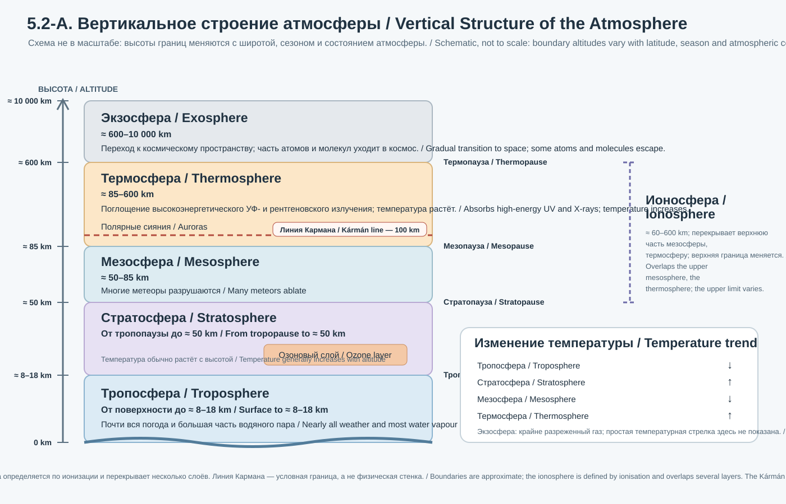
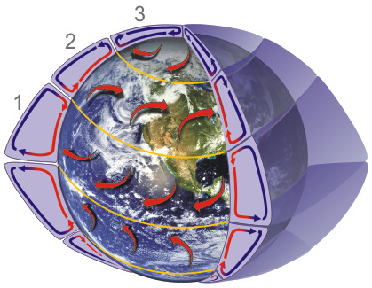
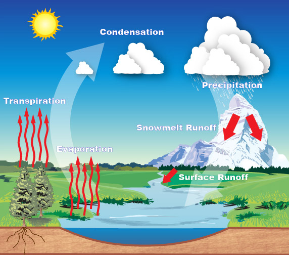
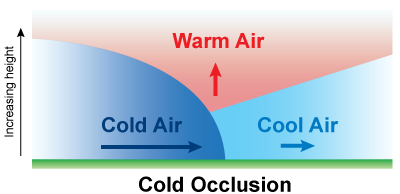
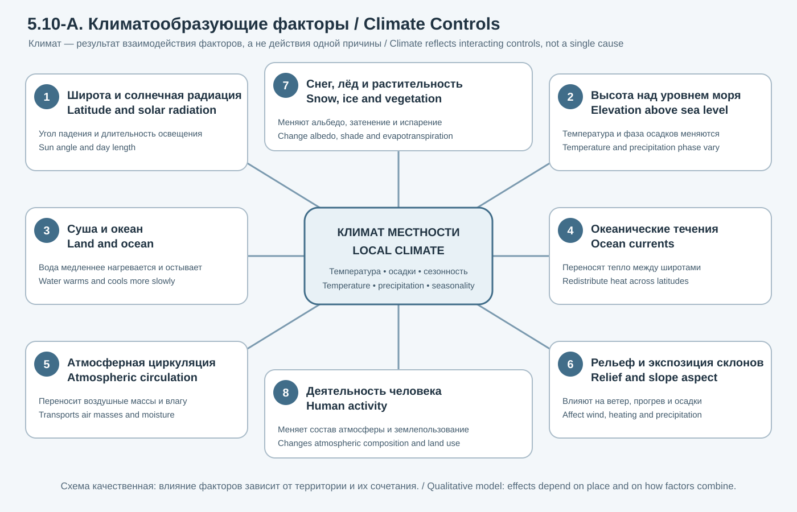
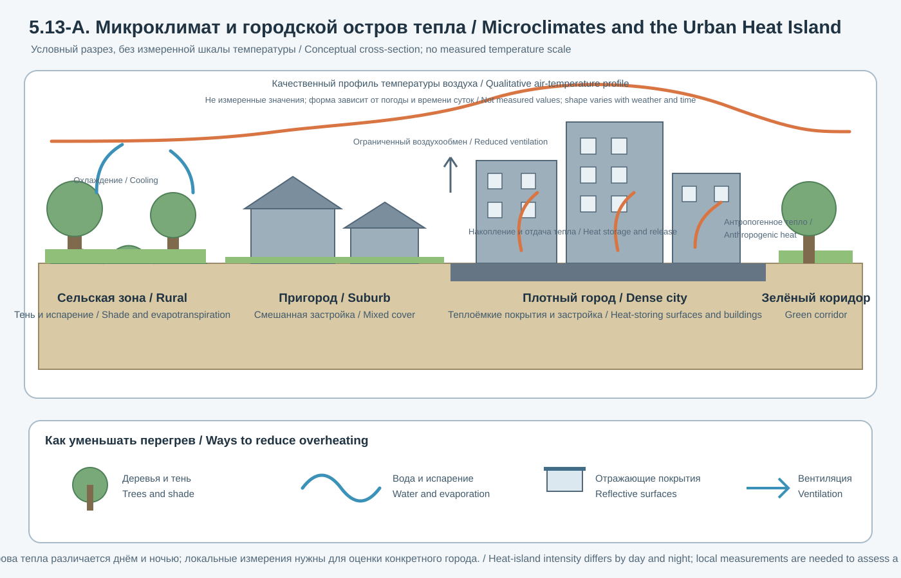
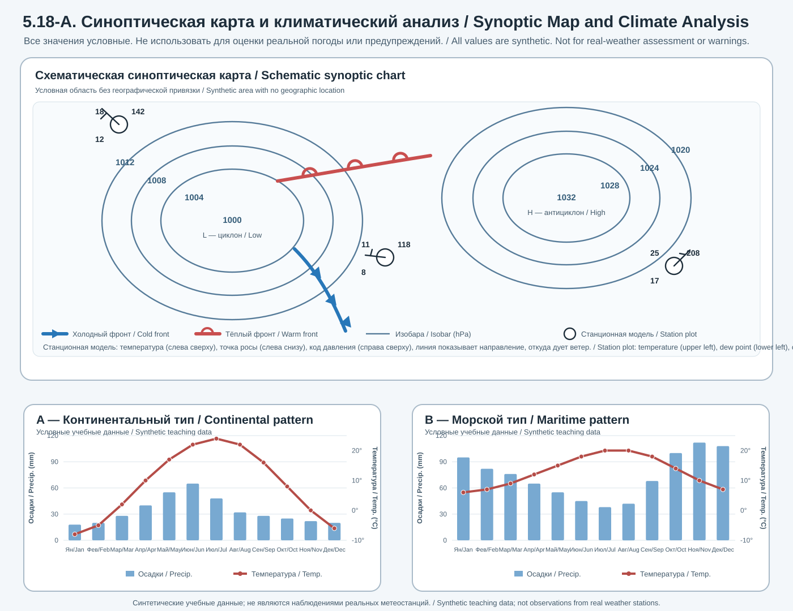

Глава 5. Атмосфера и климатология
Chapter 5. The Atmosphere and Climatology
ВведениеIntroduction
Атмосфера — газовая оболочка Земли, которую удерживает земное притяжение. Она необходима для жизни: содержит газы, используемые организмами, переносит тепло и водяной пар, участвует в круговороте воды и ослабляет часть опасного излучения. Вместе с океаном, сушей, льдом и живыми организмами атмосфера формирует климатическую систему Земли.
Погода — состояние атмосферы в определённом месте и в определённое время. Её описывают, например, температурой, облачностью, ветром и осадками. Климат — статистическая характеристика погодных условий за длительный период. Климатология изучает, почему климат различается между территориями, как он формируется, меняется и взаимодействует с другими компонентами природной среды.
5.1. Состав и значение атмосферыComposition and Role of the Atmosphere
Сухой воздух у поверхности Земли состоит преимущественно из азота и кислорода. Приближённый объёмный состав сухого воздуха:
| Газ | Доля по объёму |
|---|---|
| Азот (N₂) | около 78,08% |
| Кислород (O₂) | около 20,95% |
| Аргон (Ar) | около 0,93% |
| Углекислый газ (CO₂) | около 0,0426% (425,6 ppm — предварительное среднее NOAA за 2025 год по сети морских поверхностных станций) |
| Другие газы | следовые количества |
Водяной пар не включён в таблицу сухого воздуха: его содержание сильно меняется в пространстве и времени — от почти нулевых значений в холодном сухом воздухе до нескольких процентов во влажном тёплом воздухе.
Для CO₂ важно не смешивать разные способы расчёта: предварительное среднегодовое значение NOAA за 2025 год для сети морских поверхностных станций составляет 425,62 ppm, тогда как глобально усреднённая поверхностная концентрация WMO по сети Global Atmosphere Watch составляет 426,8 ± 0,2 ppm. Разница связана с охватом и методикой наблюдений; оба значения должны сопровождаться названием сети и типом среднего. В этой таблице приведено значение NOAA, округлённое до 425,6 ppm.
Атмосфера: - обеспечивает кислород для дыхания большинства организмов и углекислый газ для фотосинтеза; - переносит тепло и влагу; - формирует облака и осадки; - ослабляет часть ультрафиолетового излучения благодаря озоновому слою; - способствует сгоранию многих небольших метеороидов; - поддерживает естественный парниковый эффект.

Оригинальная двуязычная схема Atlas of Knowledge. Объёмные доли основных компонентов сухого воздуха приблизительны; малые компоненты вынесены отдельно и не показаны в масштабе. CO₂ — предварительное среднегодовое значение NOAA за 2025 год по морским поверхностным станциям (425,62 ppm). Значения округлены.Original bilingual Atlas of Knowledge diagram. Volume fractions of the main components of dry air are approximate; minor components are shown separately and not to scale. CO₂ is NOAA's preliminary 2025 annual marine-surface mean (425.62 ppm). Values are rounded. Данные NOAA / NOAA data.
5.2. Вертикальное строение атмосферыVertical Structure of the Atmosphere

Оригинальная двуязычная схема создана для Atlas of Knowledge с помощью ChatGPT. Высоты приблизительны и показаны не в масштабе; тропопауза меняется примерно от 8 до 18 км. Ионосфера — область ионизированного газа внутри термосферы (примерно 60–300 км); её плотность меняется между днём и ночью. Линия Кармана на 100 км является условной границей, не физической стеной. Научная основа: NOAA JetStream, Layers of the Atmosphere.Original bilingual diagram created for Atlas of Knowledge with ChatGPT assistance. Altitudes are approximate and not to scale; the tropopause varies roughly from 8 to 18 km. The ionosphere is an ionised region within the thermosphere (roughly 60–300 km); its density changes between day and night. The Kármán line at 100 km is a convention, not a physical wall. Scientific basis: NOAA JetStream, Layers of the Atmosphere. Источник данных / Scientific source.
Атмосферу делят на слои по изменению температуры с высотой. Границы слоёв не являются абсолютно постоянными: их высота зависит от широты, сезона и атмосферных условий.
5.2.1. ТропосфераTroposphere
Нижний слой атмосферы, в котором сосредоточена основная масса воздуха и почти весь атмосферный водяной пар. Здесь развиваются облака, осадки, грозы и большая часть погодных явлений.
Высота тропосферы обычно составляет примерно 8–18 км: она ниже в полярных широтах и выше в тропиках. Температура в среднем убывает с высотой, но фактический профиль может включать инверсии.
5.2.2. СтратосфераStratosphere
Простирается примерно от тропопаузы до высот около 50 км. В стратосфере находится основная часть атмосферного озона. Поглощение ультрафиолетового излучения озоном приводит к повышению температуры с высотой в значительной части этого слоя.
5.2.3. МезосфераMesosphere
Расположена приблизительно между 50 и 85 км. Температура обычно вновь снижается с высотой и достигает очень низких значений вблизи мезопаузы. В этом слое сгорает значительная часть небольших метеороидов.
5.2.4. Термосфера и экзосфераThermosphere and Exosphere
В термосфере температура резко возрастает вследствие поглощения высокоэнергетического солнечного излучения, однако из-за крайне малой плотности воздуха понятие температуры здесь не означает привычного ощущения тепла.
Экзосфера — крайне разреженная внешняя область атмосферы, постепенно переходящая в космическое пространство. Её нижняя граница в разных моделях определяется по-разному.
5.3. Солнечная радиация и тепловой баланс ЗемлиSolar Radiation and Earth's Energy Budget
Главный внешний источник энергии климатической системы — Солнце. Поток солнечной энергии, поступающий на верхнюю границу атмосферы, называется солнечной радиацией.
Часть поступающей энергии отражается облаками, аэрозолями, атмосферой и поверхностью. Остальная поглощается атмосферой и земной поверхностью, преобразуется в тепло и в конечном счёте излучается в космос в виде длинноволновой инфракрасной радиации.
5.3.1. АльбедоAlbedo
Альбедо — доля падающего излучения, отражённая поверхностью или системой. Снег и лёд обычно имеют высокое альбедо, тёмная вода и лес — сравнительно низкое. Альбедо зависит от длины волны, состояния поверхности, угла падения солнечных лучей и других факторов.
5.3.2. Парниковый эффектGreenhouse Effect
Водяной пар, углекислый газ, метан, закись азота и некоторые другие газы поглощают и излучают инфракрасную радиацию. Этот естественный парниковый эффект делает среднюю температуру поверхности Земли значительно выше, чем она была бы без соответствующих атмосферных газов.
Усиление концентраций парниковых газов вследствие деятельности человека усиливает радиационное воздействие и приводит к долгосрочному глобальному потеплению.
5.3.3. Перенос энергииEnergy Transport
Неравномерный нагрев поверхности по широте создаёт температурные контрасты. Атмосферная циркуляция и океанические течения перераспределяют энергию от низких широт к высоким.

Схема показывает потоки энергии в Вт/м²; значения основаны на среднем за десять лет и отражают более раннюю оценку энергетического баланса, а не современные измерения. Источники данных: Loeb et al., Journal of Climate (2009); Trenberth et al., Bulletin of the American Meteorological Society (2009). Изображение: NASA / My NASA Data.The diagram shows energy fluxes in W/m²; values are based on a ten-year average and represent an earlier estimate of Earth's energy budget, not current measurements. Data sources: Loeb et al., Journal of Climate (2009); Trenberth et al., Bulletin of the American Meteorological Society (2009). Image credit: NASA / My NASA Data.
Ключ к английским подписям / Russian key to image labels: Incoming solar radiation — поступающая солнечная радиация; reflected by clouds and atmosphere — отражено облаками и атмосферой; reflected by surface — отражено поверхностью; total reflected solar radiation — суммарное отражение солнечной радиации; absorbed by atmosphere — поглощено атмосферой; absorbed by surface — поглощено поверхностью; emitted by atmosphere — излучено атмосферой; emitted by clouds — излучено облаками; atmospheric window — атмосферное окно; total outgoing infrared radiation — суммарное исходящее инфракрасное излучение; back radiation — встречное излучение атмосферы; greenhouse gases — парниковые газы; thermals (conduction/convection) — тепловой перенос (теплопроводность и конвекция); latent heat (change of state) — скрытая теплота при изменении агрегатного состояния; evapotranspiration — эвапотранспирация; net absorbed — чистое поглощение.English key: the labels are translated in the Russian list above.*
ИсточникSource.
5.4. Температура воздуха и её распределениеAir Temperature and Its Distribution
Температура воздуха — характеристика его теплового состояния. На неё влияют: - широта и угол падения солнечных лучей; - высота над уровнем моря; - облачность и влажность; - свойства подстилающей поверхности; - близость океанов и крупных водоёмов; - перенос воздушных масс; - рельеф и экспозиция склонов.
5.4.1. Суточный и годовой ход температурыDaily and Annual Temperature Cycles
Суточный ход связан с вращением Земли и изменением поступления солнечной радиации в течение суток. Годовой ход определяется сезонным изменением высоты Солнца и продолжительности дня.
Максимальная температура обычно наступает после полудня, а минимальная — ближе к восходу, но облачность, ветер и свойства поверхности могут менять этот режим.
5.4.2. Вертикальный температурный градиентVertical Temperature Gradient
В тропосфере температура обычно понижается с высотой, однако фактический вертикальный градиент окружающего воздуха (environmental lapse rate) меняется в зависимости от места, времени и погодных условий. В Международной стандартной атмосфере для тропосферы до высоты около 11 км принят модельный градиент 6,5 °C на километр. Это условный профиль для расчётов, а не универсальное описание реальной атмосферы: фактическое изменение температуры может быть слабее, сильнее, близким к нулю или иметь обратный знак при инверсии. Модель атмосферы NASANASA atmospheric model.
Температурная инверсия — состояние, при котором температура с высотой повышается в некотором слое. Инверсии могут способствовать накоплению загрязняющих веществ у поверхности.

Пространственное распределение средней температуры воздуха на высоте 2 м за 30-летний период 1991–2020 по данным реанализа ERA5. Это климатическая характеристика периода, а не карта температурных аномалий и не прогноз. Автор изображения: S. Berghald; источник данных: ERA5 monthly averaged data, Copernicus Climate Data Store. Файл используется без изменений по CC BY-SA 4.0; текст лицензии.Spatial distribution of mean 2-m air temperature for the 30-year period 1991–2020 based on ERA5 reanalysis. This is a climatological field, not an anomaly map or forecast. Image author: S. Berghald; data source: ERA5 monthly averaged data, Copernicus Climate Data Store. The file is reused unchanged under CC BY-SA 4.0; licence text.
Ключ к английским подписям / Russian key to map labels: Mean 2m Air Temperature — средняя температура воздуха на высоте 2 м; Temperature (°C) — температура (°C).English labels: Mean 2m Air Temperature; Temperature (°C). Файл / File.
5.5. Атмосферное давление и ветерAtmospheric Pressure and Wind
Атмосферное давление — сила, с которой столб воздуха действует на единицу площади. Оно измеряется барометрами; распространённые единицы — гектопаскаль (гПа) и миллибар (мбар), численно равные друг другу.
Уровень давления уменьшается с высотой, поскольку над точкой остаётся меньшая масса воздуха. На горизонтальное распределение давления влияют температура, плотность воздуха и общая циркуляция атмосферы.
5.5.1. Области давленияPressure Systems
- Циклон: область относительно пониженного давления; в приземном слое воздух обычно сходится к центру и поднимается.
- Антициклон: область относительно повышенного давления; в приземном слое воздух обычно расходится от центра, а движение в среднем связано с нисходящими потоками.
Направление вращения циклонов и антициклонов определяется силой Кориолиса и различается между полушариями. Вблизи экватора эффект Кориолиса слаб, поэтому классические крупномасштабные вращающиеся системы там формируются иначе.
5.5.2. ВетерWind
Ветер — горизонтальное движение воздуха относительно поверхности. Его формирование связано с градиентом давления, вращением Земли, трением и кривизной траекторий.
Основные факторы: - сила градиента давления; - сила Кориолиса; - трение у поверхности; - центростремительное ускорение в криволинейном потоке.
Скорость ветра измеряют анемометром, направление — флюгером или другими приборами. Направление ветра называют по той стороне горизонта, откуда он дует.

Пример синоптической карты: центры высокого и низкого давления, изобары и связанное с ними поле ветра. Схема и пояснение Национальной метеорологической службы США (NWS), страница Basic Discussion on Pressure Systems. Пример относится к Северному полушарию: в Южном полушарии направление циклонического и антициклонического вращения противоположно.Example synoptic chart showing high- and low-pressure centres, isobars and the associated wind field. Diagram and explanation by the U.S. National Weather Service (NWS), Basic Discussion on Pressure Systems. This example is for the Northern Hemisphere; cyclonic and anticyclonic rotation is reversed in the Southern Hemisphere. Источник / Source.
5.6. Общая циркуляция атмосферыGeneral Atmospheric Circulation

Трёхъячеечная модель общей циркуляции атмосферы. NOAA, JetStream: Global Atmospheric Circulations. Государственный образовательный ресурс США; схема иллюстрирует упрощённую модель, а не полную изменчивость реальной циркуляции.Three-cell model of global atmospheric circulation. NOAA, JetStream: Global Atmospheric Circulations. U.S. government educational resource; the figure illustrates a simplified model, not the full variability of real circulation. Источник / Source.
Глобальная циркуляция формируется из-за неравномерного нагрева Земли, вращения планеты, распределения суши и океана, сезонных изменений и взаимодействия с океанами.
В идеализированной модели каждого полушария выделяют три ячейки: - ячейка Хэдли — в тропиках и субтропиках; - ячейка Феррела — в средних широтах; - полярная ячейка — в высоких широтах.
Эта трёхъячеечная схема — упрощённая модель. Реальная циркуляция сложнее и включает сезонные миграции зон давления, струйные течения, циклоны, антициклоны и региональные особенности.
5.6.1. Постоянные и сезонные ветрыPlanetary and Seasonal Winds
- Пассаты: устойчивые восточные ветры тропических широт.
- Западные ветры: преобладают в значительной части средних широт.
- Полярные восточные ветры: характерны для высоких широт.
- Муссоны: сезонно меняющие направление системы ветров, связанные с контрастом нагрева суши и океана и региональной циркуляцией.
5.6.2. Струйные теченияJet Streams
Струйные течения — узкие зоны сильных ветров в верхней тропосфере и нижней стратосфере. Они влияют на траектории циклонов, перенос воздушных масс и погодные условия в средних широтах.
5.7. Влажность, облака и осадкиHumidity, Clouds and Precipitation

Оригинальная двуязычная схема Atlas of Knowledge, адаптированная по Figure 2 из руководства American Meteorological Society, Project Atmosphere: Clouds (2025). Исходная Figure 2 лицензирована CC BY-SA 4.0; схема переработана и упрощена для учебных целей. Для производной работы сохраняются условия CC BY-SA 4.0; текст лицензии. Подъём сам по себе не гарантирует осадки: для образования облака влажный воздух должен охладиться до насыщения.Original bilingual Atlas of Knowledge diagram adapted from Figure 2 of the American Meteorological Society's Project Atmosphere: Clouds (2025) teacher's guide. The source figure is licensed CC BY-SA 4.0; the diagram has been redrawn and simplified for teaching. The derivative must retain the CC BY-SA 4.0 terms; licence text. Ascent alone does not guarantee precipitation: moist air must cool to saturation for a cloud to form. Источник / Source.
Влажность характеризует содержание водяного пара в воздухе. Важные показатели — абсолютная влажность, удельная влажность, парциальное давление водяного пара и относительная влажность.
Относительная влажность показывает, насколько воздух близок к насыщению водяным паром. Её определяют как отношение фактического парциального давления водяного пара к давлению насыщенного пара при той же температуре, выраженное в процентах:
Относительная влажность = (фактическое давление пара / давление насыщенного пара) × 100 %
Относительная влажность зависит и от количества водяного пара, и от температуры: при неизменном содержании влаги охлаждение воздуха обычно повышает относительную влажность. При достижении точки росы воздух становится насыщенным, и при подходящих условиях начинается конденсация.
5.7.1. Образование облаковCloud Formation
Облака формируются, когда влажный воздух охлаждается до насыщения и образуются облачные частицы. Капли воды возникают при конденсации водяного пара на ядрах конденсации; кристаллы льда могут образовываться на ледяных ядрах. В облаках возможны переохлаждённые капли и смесь жидких и твёрдых частиц. Подъём воздуха — один из распространённых способов охлаждения, но облака могут развиваться и при других изменениях температуры и влажности.
В международной классификации ВМО выделяют десять основных родов облаков: - верхнего яруса: перистые, перисто-кучевые, перисто-слоистые; - среднего яруса: высококучевые, высокослоистые, слоисто-дождевые; - нижнего яруса: слоисто-кучевые, слоистые; - вертикального развития: кучевые и кучево-дождевые.
Высотные границы ярусов зависят от широты и условий атмосферы, а группы по высоте являются ориентировочными: некоторые облака охватывают несколько ярусов. Например, слоисто-дождевые облака могут простираться от нижнего яруса вверх, а кучево-дождевые имеют большое вертикальное развитие. Название рода описывает форму и структуру облака, но само по себе не гарантирует определённый вид погоды.
5.7.2. Виды осадковTypes of Precipitation
- дождь;
- морось;
- снег;
- дождь со снегом (мокрый снег);
- ледяные крупинки;
- ледяной дождь;
- град.
Английский термин sleet употребляется неодинаково в разных странах: в США обычно означает ледяные крупинки, а в Великобритании может означать смесь дождя и снега. Поэтому в учебном тексте точнее называть вид осадков, а не полагаться только на этот термин.
Осадки измеряют осадкомерами и другими приборами. Их количество обычно выражают в миллиметрах водного эквивалента: твёрдые осадки при необходимости растапливают и измеряют полученную воду. Высоту свежевыпавшего снега измеряют отдельно, поскольку она зависит от плотности и структуры снежного покрова. Методика измерения снега: Национальная метеорологическая служба США.
5.7.3. Орографические осадкиOrographic Precipitation
При подъёме влажного воздуха по наветренному склону он охлаждается, что может усиливать облакообразование и осадки. На подветренной стороне часто формируется более сухая область — дождевая тень. Реальный эффект зависит от направления ветра, устойчивости атмосферы, высоты хребта и влажности воздушной массы.

Схема круговорота воды: испарение, транспирация, конденсация, осадки, снеготаяние и поверхностный сток. NOAA JetStream. Это базовая учебная схема: она не показывает все резервуары и потоки воды, например подземный водообмен.Diagram of the water cycle: evaporation, transpiration, condensation, precipitation, snowmelt and surface runoff. NOAA JetStream. This is a basic educational schematic; it does not show every water reservoir and flow, such as groundwater exchange.
Ключ к английским подписям / Russian key to image labels: evaporation — испарение; transpiration — транспирация; condensation — конденсация; precipitation — осадки; snowmelt runoff — сток талой воды; surface runoff — поверхностный сток.English labels: evaporation, transpiration, condensation, precipitation, snowmelt runoff and surface runoff. Источник / Source.
5.8. Воздушные массы и атмосферные фронтыAir Masses and Fronts
Воздушная масса — крупный объём воздуха с относительно однородными характеристиками температуры и влажности, сформировавшийся над определённым районом.
Воздушные массы обычно обозначают сочетанием двух характеристик: широты района формирования (например, арктические, полярные или тропические) и типа подстилающей поверхности (континентальные или морские). Поэтому корректные примеры — континентальная полярная или морская тропическая воздушная масса. Конкретные названия и границы классов могут различаться между метеорологическими классификациями.
Атмосферный фронт — наклонная переходная зона между воздушными массами с различающимися температурой, влажностью и плотностью; на приземной синоптической карте её положение показывают условной линией.
- Холодный фронт: наступающий холодный воздух вытесняет более тёплый и обычно поднимает его. Часто наблюдаются более резкие изменения температуры и ветра; возможны ливни и грозы, но их развитие зависит от влажности и устойчивости атмосферы.
- Тёплый фронт: наступающий тёплый воздух скользит вверх над отступающим холодным воздухом. Часто облачность постепенно уплотняется, а осадки могут начинаться до прохождения линии фронта.
- Фронт окклюзии: холодный фронт догоняет тёплый, и тёплый воздух оказывается вытеснен вверх от поверхности. Структура окклюзии зависит от температурного контраста воздушных масс; различают холодный и тёплый типы.
- Стационарный фронт: граница между воздушными массами почти не перемещается. Облачность и осадки могут сохраняться вблизи фронта, если поддерживается подъём воздуха.
Фронт — не обязательно узкая вертикальная стенка: переходная зона имеет протяжённость и наклон. Реальные системы могут отклоняться от идеализированных схем из-за рельефа, ветра и эволюции циклона. Прохождение фронта не гарантирует одинаковый набор явлений в каждом месте.
Иллюстрация 5.8-A — Atmospheric Fronts. Условные обозначения четырёх основных фронтов на синоптических картах и вертикальный разрез холодной окклюзии. Разрез показан как пример одного типа окклюзии; он не заменяет отдельные профили холодного, тёплого и стационарного фронтов.
Условные знаки холодного, тёплого, стационарного и окклюдированного фронтов на приземных синоптических картах. Треугольники и полукружия указывают направление движения фронта; у стационарного фронта символы направлены в разные стороны. Источник: NOAA JetStream.Standard symbols for cold, warm, stationary and occluded fronts on surface weather maps. Triangles and semicircles indicate the direction of frontal movement; on a stationary front, symbols point in opposite directions. Source: NOAA JetStream. Источник / Source.

Упрощённый вертикальный разрез холодной окклюзии: более холодный воздух позади холодного фронта подтекает под более прохладный воздух впереди тёплого фронта, поднимая тёплый воздух над поверхностью. Это пример одного типа окклюзии, а не универсальная схема всех фронтов.Simplified vertical cross-section of a cold occlusion: colder air behind the cold front undercuts the cooler air ahead of the warm front, lifting the warm air above the surface. This illustrates one type of occlusion, not a universal cross-section for all fronts.
Ключ к английским подписям / Russian key to image labels: Warm Air — тёплый воздух; Cold Air — холодный воздух; Cool Air — прохладный воздух; Increasing height — увеличение высоты.English labels: Warm Air, Cold Air, Cool Air and Increasing height. Источник / Source.
5.9. Погода и климат: различия и наблюденияWeather and Climate
Погода — состояние атмосферы в определённом месте и в определённый момент или период. Её описывают температура, давление, ветер, влажность, облачность, видимость и осадки.
Климат — статистический режим погоды, характерный для территории на протяжении длительного периода, с учётом средних значений, изменчивости, экстремумов и вероятностей явлений.
Всемирная метеорологическая организация (ВМО) определяет стандартные климатические нормы как средние значения за последовательные 30-летние периоды, заканчивающиеся годом на «0»; текущий стандартный период — 1991–2020 годы. ВМО рекомендует обновлять нормы раз в десятилетие. Климатическая норма — не любое произвольно выбранное 30-летнее среднее, поэтому при публикации климатических данных необходимо указывать конкретный базовый период.
Метеорологические наблюдения проводят на наземных станциях, морских платформах, метеорологических радарах, воздушных шарах, самолётах и спутниках.
Иллюстрация 5.9-A — Weather vs Climate.

Оригинальная двуязычная схема Atlas of Knowledge. Левая панель показывает условные краткосрочные изменения погоды; правая — статистическое описание климата: среднее и диапазон изменчивости на длинном ряду наблюдений. Иллюстративные точки и линии не являются измеренными данными. Климатические нормы ВМО рассчитываются для стандартных последовательных 30-летних периодов; используемый период необходимо указывать. Один холодный день не опровергает долгосрочную тенденцию.Original bilingual Atlas of Knowledge diagram. The left panel shows conceptual short-term weather changes; the right shows a statistical description of climate: an average and a range of variability across a long observation record. The plotted points and lines are illustrative, not measured data. WMO climatological standard normals use consecutive 30-year periods; the reference period must be stated. A single cold day does not disprove a long-term trend. NOAA: Climate Compared to Weather · WMO: Climate Normals.
5.10. Климатообразующие факторыClimate Controls
Климат территории формируется под влиянием комплекса факторов:
- Географическая широта и солнечная радиация.
- Высота над уровнем моря.
- Распределение суши и океана.
- Океанические течения.
- Общая циркуляция атмосферы.
- Рельеф, экспозиция и ориентация горных хребтов.
- Снежный и ледовый покров, растительность и свойства поверхности.
- Антропогенные изменения состава атмосферы и землепользования.
Ни один фактор не действует изолированно. Например, климат побережья определяется не только широтой, но и морскими течениями, ветрами и конфигурацией береговой линии. Дополнительный учебный источник: NOAA, What Is Climate?.

Оригинальная двуязычная концептуальная схема Atlas of Knowledge. Показаны восемь групп факторов, влияющих на климат совместно; соединительные линии обозначают взаимосвязь, а не количественную силу или единственное направление причинности. Влияние каждого фактора зависит от местных условий.Original bilingual conceptual diagram by Atlas of Knowledge. It shows eight groups of interacting climate controls; connectors indicate relationships, not quantitative strength or a single direction of causation. The influence of each factor depends on local conditions. Научная основа / Scientific basis: NOAA, What Is Climate?.
5.11. Климатические классификации и типы климатаClimate Classification and Climate Types
Классификации климата систематизируют климатические условия по температуре, осадкам, сезонности и другим показателям.
5.11.1. Классификация Кёппена — ГейгераKöppen–Geiger Classification
Одна из наиболее распространённых схем использует буквенные обозначения пяти крупных климатических групп: - A — тропические; - B — сухие; - C — умеренные; - D — континентальные (снежные); - E — полярные.
Внутри групп выделяются подтипы по температурному и осадочному режиму. Границы климатических классов зависят от использованной версии классификации и периода климатических данных.
5.11.2. Другие подходыOther Approaches
Помимо Кёппена — Гейгера применяются генетические классификации, классификации по водному балансу, биоклиматические схемы и региональные системы. Для прикладных задач выбирают метод, соответствующий цели исследования.

Карта климатических классов Кёппена — Гейгера с пространственным разрешением 1 км; период исходных климатических данных — 1991–2020. Карта показывает типы климата, а не широтные климатические пояса. Автор карты: Nothda; лицензия CC0 1.0. Исходная научная работа: Beck et al.(2023), DOI: 10.1038/s41597-023-02549-6. / Köppen–Geiger climate classes at 1-km spatial resolution; underlying climate-data period: 1991–2020. The map shows climate types, not latitudinal climate belts. Map author: Nothda; licence CC0 1.0. Underlying research: Beck et al. (2023), DOI: 10.1038/s41597-023-02549-6.
Ключ к подписи и легенде / Map-title and legend key: Köppen–Geiger climate classification map — карта климатической классификации Кёппена — Гейгера. Буквенные обозначения классов (Af, Am, Aw и др.) являются стандартными кодами классификации и не переводятся.The letter combinations (Af, Am, Aw, etc.) are standard classification codes and remain unchanged. Файл и лицензия / File and licence.
5.12. Климатические пояса и региональные различияClimate Belts and Regional Patterns
В широком географическом обобщении выделяют экваториальный, субэкваториальный, тропический, субтропический, умеренный, субполярный и полярный пояса. Их положение и выраженность зависят от циркуляции атмосферы и сезонной миграции зон солнечного прогрева.
Климатические пояса не следует путать с конкретными типами климата: внутри одного пояса могут существовать влажные, сухие, континентальные и муссонные разновидности.
Основные региональные контрасты
- Экваториальные районы обычно получают много солнечной энергии в течение года.
- Субтропические области часто включают зоны нисходящего воздуха и крупные пустыни.
- Средние широты характеризуются выраженной сезонностью и частой сменой воздушных масс.
- Полярные районы получают мало солнечной энергии в среднем за год и имеют низкие температуры.
- Горные районы отличаются сильной высотной и экспозиционной дифференциацией климата.
Иллюстрация 5.12-A — Global Climate Belts / Климатические пояса мира.

Оригинальная двуязычная концептуальная схема Atlas of Knowledge. Показаны экваториальный, тропический, субтропический, умеренный, субполярный и полярный пояса в обоих полушариях. Волнистые границы подчёркивают, что климатические пояса не являются идеальными параллельными полосами; их положение зависит от сезона, циркуляции атмосферы, распределения суши и океана и рельефа. Схема не предназначена для определения точных границ или классификации конкретного места.Original bilingual conceptual diagram by Atlas of Knowledge. It shows equatorial, tropical, subtropical, temperate, subpolar and polar belts in both hemispheres. Curved boundaries emphasise that climate belts are not perfect parallel bands; their position is influenced by season, atmospheric circulation, land–ocean distribution and relief. The diagram is not intended for locating exact boundaries or classifying a specific place.
5.13. Микроклимат и городской климатMicroclimates and Urban Climate
Микроклимат — климатические особенности небольшого участка, обусловленные местными условиями: рельефом, растительностью, влажностью почвы, водоёмами, застройкой и затенением.
Городской остров тепла возникает, когда городские поверхности и застройка накапливают и удерживают тепло, а испарительное охлаждение и вентиляция могут быть ограничены. Интенсивность эффекта меняется в зависимости от времени суток, сезона, погоды, плотности застройки и озеленения.
Меры смягчения: - увеличение площади зелёных насаждений; - создание затенённых общественных пространств; - использование отражающих и проницаемых покрытий; - сохранение вентиляционных коридоров; - эффективное управление водой и городской инфраструктурой.
Эти меры воздействуют на разные механизмы городского острова тепла: затенение, испарительное охлаждение, отражение и накопление солнечной энергии, а также движение воздуха. Эффект зависит от местного климата, городской формы и материалов. Источник: Агентство по охране окружающей среды США (EPA), Urban Heat Islands.

Оригинальная двуязычная концептуальная схема Atlas of Knowledge. Показан возможный контраст между более озеленённой местностью и плотной застройкой; температурный профиль качественный, без измеренной шкалы. Тепловой остров может проявляться днём и ночью, но его интенсивность меняется с погодой, временем суток, сезоном, городской формой и материалами. Деревья и вода могут охлаждать за счёт тени и испарения; покрытия и здания способны накапливать и отдавать тепло, а плотная застройка — изменять вентиляцию.Original bilingual conceptual diagram by Atlas of Knowledge. It shows a possible contrast between greener surroundings and dense built-up areas; the temperature profile is qualitative and has no measured scale. Heat islands can occur by day and night, but their intensity varies with weather, time of day, season, urban form and materials. Trees and water can cool through shade and evaporation; built surfaces can store and release heat, while dense urban geometry can alter ventilation. Научная основа / Scientific basis: U.S. EPA, What Are Heat Islands?.
5.14. Опасные атмосферные явленияAtmospheric Hazards
Атмосферные явления могут создавать угрозы здоровью, инфраструктуре, сельскому хозяйству и транспорту.
5.14.1. Грозы, молнии и градThunderstorms, Lightning and Hail
Грозы связаны с мощными восходящими потоками и кучево-дождевыми облаками. Молнии представляют опасность даже вне зоны наиболее интенсивных осадков. Град формируется при многократном перемещении ледяных частиц в сильных восходящих потоках.
5.14.2. Сильный ветер и штормыHigh Winds and Storms
Штормовые ветры могут быть связаны с циклонами, фронтами, грозовыми системами и местными эффектами рельефа. Тропические циклоны обычно развиваются над достаточно тёплой океанической водой (ориентировочно от 26,5–27 °C на достаточной глубине) при сочетании нескольких условий: влажного воздуха в средней тропосфере, атмосферы, благоприятной для глубокой конвекции, начального атмосферного возмущения, слабого вертикального сдвига ветра и достаточного удаления от экватора для действия силы Кориолиса. Один лишь тёплый океан не гарантирует образования циклона. В разных регионах такие системы называют ураганами, тайфунами или тропическими циклонами. Источник: NOAA, условия формирования тропических циклонов.
5.14.3. Засухи и волны жарыDroughts and Heatwaves
Засуха — продолжительный дефицит влаги или доступной воды относительно обычных условий территории. Различают несколько взаимосвязанных видов: - метеорологическая — длительный дефицит осадков относительно нормы; - сельскохозяйственная — недостаток влаги в почве, влияющий на растения и урожай; - гидрологическая — снижение запасов воды в реках, озёрах, водохранилищах и подземных водах; - социально-экономическая — ситуация, когда дефицит воды нарушает обеспечение населения и хозяйства и приводит к несоответствию спроса и доступного предложения.
Эти виды могут развиваться последовательно, но не обязательно одновременно: последствия зависят от сезона, почв, водохранилищ, управления водой и уязвимости территории.Методические определения: ВМО, Guidelines on the Definition and Characterization of Extreme Weather and Climate Events (2023).
Волна жары — период аномально высоких температур, определяемый относительно местного климата и принятого порога. Универсального температурного значения для всех регионов нет; для сопоставления событий используют показатели, учитывающие местные климатические условия. Руководство ВМО по экстремальным погодным и климатическим явлениям (2023).
5.14.4. Сильные снегопады, метели и гололёдHeavy Snow, Blizzards and Ice
Сильные снегопады и метели ухудшают видимость, нарушают транспорт и повышают нагрузку на сооружения. Гололёд образуется при замерзании переохлаждённых капель на холодных поверхностях.
5.14.5. Туман и пыльные буриFog and Dust Storms
Туман — скопление мельчайших капель воды, а при подходящих условиях и ледяных кристаллов у поверхности земли, которое снижает горизонтальную видимость до значения менее 1 км. Он может возникать, когда воздух охлаждается до точки росы или когда его влажность возрастает до насыщения. Пыльные и песчаные бури возникают, когда ветер поднимает частицы с сухой, рыхлой и слабо защищённой поверхности; они ухудшают видимость и могут быть опасны для здоровья. Источник: NOAA, классификация атмосферных явлений и ухудшения видимости.
Иллюстрация 5.14-A — Atmospheric Hazards / Опасные атмосферные явления.

Оригинальная двуязычная учебная инфографика Atlas of Knowledge: грозы и молнии, жара и засуха, штормовой ветер и циклоны, сильный снег и гололёд, туман и пыльные бури. Меры приведены как общие рекомендации; конкретные действия должны соответствовать местным официальным предупреждениям и условиям. Схема не ранжирует явления по частоте или опасности.Original bilingual Atlas of Knowledge educational infographic: thunderstorms and lightning, heatwaves and drought, high winds and cyclones, heavy snow and ice, fog and dust storms. Actions are general guidance; specific decisions should follow local official warnings and conditions. The diagram does not rank hazards by frequency or severity.
5.15. Изменение климатаClimate Change
Климат Земли изменялся на протяжении всей геологической истории под воздействием естественных факторов: изменений орбиты и наклона оси, солнечной активности, вулканизма, тектоники и внутренних колебаний климатической системы.
Современное глобальное потепление отличается тем, что основная причина наблюдаемого долгосрочного роста глобальной температуры — человеческие выбросы парниковых газов, прежде всего вследствие сжигания ископаемого топлива, землепользования и некоторых промышленных процессов.
5.15.1. Основные наблюдаемые измененияObserved Changes
К наблюдаемым проявлениям относятся: - повышение средней глобальной температуры поверхности; - потепление океана; - повышение среднего уровня моря; - сокращение массы ледников и ледяных щитов; - изменения снежного покрова и сезонности; - увеличение вероятности и интенсивности некоторых экстремальных явлений в ряде регионов.
Изменения различаются по регионам. Нельзя автоматически переносить глобальную тенденцию на каждый отдельный регион или год.
5.15.2. Воздействие и адаптацияImpacts and Adaptation
Климатические риски зависят от опасного явления, подверженности населения и инфраструктуры, а также уязвимости систем.
Адаптационные меры включают раннее предупреждение, устойчивое водное управление, климатически устойчивое сельское хозяйство, защиту берегов, городское охлаждение и планирование инфраструктуры с учётом будущих условий.
Сокращение выбросов парниковых газов называется смягчением изменения климата (mitigation). Адаптация (adaptation) направлена на уменьшение ущерба и использование возможных благоприятных последствий.
Изменение климата: причины, свидетельства и ответы.Иллюстрация 5.15-A — Climate Change: Drivers, Evidence and Responses

Оригинальная двуязычная причинно-следственная схема Atlas of Knowledge. Она показывает общую последовательность: деятельность человека → выбросы парниковых газов → рост их концентрации и радиационного воздействия → нагрев климатической системы → наблюдаемые изменения. Нижний блок разделяет смягчение изменения климата (сокращение выбросов и усиление поглощения) и адаптацию (снижение уязвимости и подготовка к рискам). Естественная изменчивость климата продолжается, но не объясняет современную долгосрочную тенденцию потепления. Схема качественная, не количественная; она не показывает величину вклада каждого сектора или прогноз для отдельного региона.Original bilingual causal diagram by Atlas of Knowledge. It shows the general sequence: human activities → greenhouse-gas emissions → higher concentrations and radiative forcing → warming of the climate system → observed changes. The lower panel distinguishes mitigation (cutting emissions and enhancing removals) from adaptation (reducing vulnerability and preparing for risks). Natural climate variability continues but does not explain the modern long-term warming trend. This is a qualitative, not quantitative, diagram; it does not quantify sector contributions or provide a regional forecast.
5.16. Метеорология, климатические данные и прогнозированиеMeteorology, Climate Data and Forecasting
Метеорология изучает атмосферные процессы и погоду. Прогнозы строятся на наблюдениях, физических уравнениях и численных моделях атмосферы.
Источники данных: - метеорологические станции; - радиозонды; - метеорологические радары; - метеорологические спутники; - морские буи и корабли; - авиационные наблюдения; - реанализы и климатические наборы данных.
Численный прогноз погоды использует математические модели, описывающие движение воздуха, термодинамику, влагу и взаимодействие атмосферы с поверхностью. Точность прогноза зависит от исходных наблюдений, разрешения модели, качества физической схемы и предсказуемости атмосферного процесса.
Климатические модели отличаются от краткосрочных прогнозов: они исследуют статистические характеристики системы и её реакцию на сценарии внешнего воздействия, а не пытаются предсказать точную погоду на конкретный день через десятилетия.

5.16.1. Практический пример: анализ годового хода температуры и осадковWorked Example: Analysing Annual Temperature and Precipitation
Рассмотрим условные среднемесячные данные одной метеостанции. Они приведены только для учебного расчёта и не описывают конкретный населённый пункт.
| Месяц | Температура, °C | Осадки, мм |
|---|---|---|
| Январь | −3 | 20 |
| Февраль | −1 | 22 |
| Март | 5 | 30 |
| Апрель | 12 | 45 |
| Май | 18 | 60 |
| Июнь | 23 | 40 |
| Июль | 26 | 25 |
| Август | 25 | 20 |
| Сентябрь | 19 | 25 |
| Октябрь | 11 | 35 |
| Ноябрь | 4 | 30 |
| Декабрь | −1 | 25 |
Шаг 1. Находим годовую амплитуду температуры.
Самая высокая среднемесячная температура — 26 °C в июле, самая низкая — −3 °C в январе. Амплитуда равна разности: 26 − (−3) = 29 °C.
Шаг 2. Рассчитываем годовую сумму осадков.
Складываем месячные значения: 20 + 22 + 30 + 45 + 60 + 40 + 25 + 20 + 25 + 35 + 30 + 25 = 377 мм.
Шаг 3. Описываем сезонность.
Наибольшее количество осадков в этом условном наборе выпадает в мае (60 мм), наименьшее — в августе (20 мм). Температура достигает максимума в июле. Следовательно, максимум температуры и максимум осадков не совпадают по времени.
Шаг 4. Ограничиваем вывод.
Эти значения позволяют описать годовой ход температуры и осадков, но сами по себе не дают надёжного основания присвоить территории климатический тип или установить долгосрочную тенденцию. Для этого нужны координаты и высота станции, многолетний сопоставимый ряд наблюдений и выбранная климатическая классификация.
Проверьте себя: какова амплитуда температуры, если минимальная среднемесячная температура равна −5 °C, а максимальная — 24 °C?
5.17. Практическое чтение климатограммReading Climate Graphs
Климатограмма обычно показывает среднемесячную температуру и количество осадков за определённый период. В этой главе используется единый формат: столбцы показывают осадки в миллиметрах, линия — температуру в градусах Цельсия. Перед сравнением необходимо проверить, что обе диаграммы относятся к сопоставимым периодам наблюдений.

Оригинальная двуязычная учебная схема Atlas of Knowledge. Два набора данных условные и предназначены только для тренировки чтения графиков; они не относятся к реальным метеостанциям и не должны использоваться для определения климата конкретной территории. Столбцы — месячные осадки (мм), линия — среднемесячная температура (°C).Original bilingual Atlas of Knowledge teaching diagram. Both datasets are synthetic and intended only for graph-reading practice; they do not represent real weather stations and must not be used to classify the climate of a real location. Bars show monthly precipitation (mm); the line shows mean monthly temperature (°C).
При анализе климатограммы следует: 1. Проверить название станции, высоту, координаты и период наблюдений. 2. Определить месяцы максимальной и минимальной температуры. 3. Найти сезон распределения осадков. 4. Рассчитать годовую амплитуду температуры: максимальная среднемесячная температура минус минимальная. 5. Сложить месячные значения осадков, чтобы получить годовую сумму. 6. Сравнить сезонность температуры и осадков; отметить, совпадают ли их максимумы. 7. Не делать вывод о долгосрочном изменении климата по одной климатограмме без сопоставимого временного ряда.
Чтение диаграмм. Пример A показывает большую годовую амплитуду температуры и сравнительно небольшое количество осадков с максимумом в тёплую часть года. Пример B характеризуется меньшей годовой амплитудой и осадками в течение всего года. Эти особенности иллюстрируют континентальное и морское влияние, однако одной диаграммы недостаточно для надёжного определения климатического типа: нужны местоположение, высота, достаточно продолжительный период наблюдений и указанная методика классификации.
Учебное задание / Learning activity: для каждой диаграммы определите самый тёплый и холодный месяцы, рассчитайте годовую амплитуду температуры, найдите самый влажный и самый сухой месяцы и сложите осадки за год. Затем сравните сезонные особенности двух примеров.
5.18. Анализ климатических данных и синоптических картClimate Data and Synoptic-Chart Analysis
5.18.1. Как сравнивать климатические аномалииComparing Climate Anomalies
Абсолютные значения температуры и осадков не всегда подходят для сравнения разных мест. Температура +5 °C может быть обычной для одного месяца и необычно высокой для другого района или сезона. Поэтому климатологи используют аномалию — отклонение наблюдаемого значения от выбранной климатической нормы.
Для температуры простая аномалия рассчитывается так:
Аномалия = наблюдаемая температура − климатическая норма
Если средняя температура месяца составила +8 °C, а норма для того же месяца и станции равна +5 °C, аномалия составляет +3 °C. Это не означает, что весь месяц был на 3 °C теплее в каждый день: речь идёт о разнице месячных средних.
Сопоставимость обязательна. Норма должна относиться к той же станции или корректно сопоставимой территории, тому же календарному периоду и явно указанному базовому интервалу. При изменении расположения станции, прибора или окружающей застройки ряд может содержать неоднородности; для долгосрочного анализа применяют контроль качества и процедуры гомогенизации.
Для осадков часто полезны не только абсолютные миллиметры, но и процент от нормы. Однако относительное отклонение становится неустойчивым там, где обычное количество осадков очень мало. В таких случаях лучше приводить абсолютную разницу и пояснять сезонный контекст.
Почему это важно для гор Кыргызстана. Нельзя напрямую сравнивать аномалию в высокогорной станции с абсолютной температурой в долине и делать вывод о пространственной картине потепления. Нужны сопоставимые периоды, высотный контекст, качество наблюдений и достаточная сеть станций. Межгодовая изменчивость также не равна долгосрочному тренду.
Учебное задание. Для трёх станций рассчитайте температурные аномалии одного и того же месяца относительно нормы каждой станции, используя общий базовый период (например, 1991–2020). Сравните знаки и величины отклонений. Затем объясните, почему один месяц не доказывает климатический тренд и какие данные нужны для оценки многолетнего изменения.
Для оперативного описания современных условий обычно используют актуальную стандартную норму 1991–2020. В исследованиях долгосрочного изменения климата может применяться фиксированный базовый период 1961–1990, чтобы сравнения разных лет оставались привязаны к одной и той же исходной точке. Выбор зависит от задачи; базовый период всегда нужно указывать.
Источники: ВМО, Руководство по расчёту климатических норм (WMO-No. 1203, 2017); ВМО, Руководство по гомогенизации (WMO-No.1245, 2020); WMO, Updated 30-year reference period reflects changing climate (2021).
5.18.2. Чтение синоптической картыReading a Synoptic Chart
Синоптическая карта показывает состояние атмосферы в определённый срок на большой территории. Изобары соединяют точки с одинаковым атмосферным давлением, приведённым к среднему уровню моря. Чем ближе изобары друг к другу, тем обычно сильнее горизонтальный градиент давления и ветер; фактическая скорость также зависит от трения, устойчивости и рельефа. Центр циклона отмечают областью пониженного давления, антициклона — повышенного. Условные знаки фронтов показывают тип границы и предполагаемое направление её перемещения.
При учебном анализе: 1. прочитайте дату, время и единицы измерения карты; 2. найдите области высокого и низкого давления по значениям изобар; 3. определите типы фронтов и направление их движения по условным знакам; 4. сопоставьте фронты с ветром, облачностью, осадками и температурой на станционных моделях; 5. сформулируйте вероятное изменение погоды, отделяя наблюдаемые данные от прогноза.
Синоптическая карта — снимок атмосферной ситуации, а не гарантия будущей погоды. Для прогноза нужны последовательные наблюдения и анализ движения системы; учебная схема с условными данными не заменяет официальные предупреждения.
Источники: NOAA, How to read Surface Weather Maps; WMO, International Cloud Atlas.
Итоги главыChapter Summary
- Атмосфера состоит преимущественно из азота и кислорода; водяной пар и малые газы имеют важное климатическое значение.
- Вертикальная структура атмосферы включает тропосферу, стратосферу, мезосферу, термосферу и экзосферу.
- Климатическая система получает энергию от Солнца и перераспределяет её между широтами.
- Давление, ветер, влажность, облачность и осадки взаимосвязаны.
- Общая циркуляция атмосферы определяет глобальные ветровые пояса и влияет на климат регионов.
- Погода описывает краткосрочное состояние атмосферы, климат — её статистические характеристики на длительном интервале.
- Климатообразующие факторы включают широту, высоту, океаны, рельеф и циркуляцию.
- Климатические аномалии следует сравнивать относительно согласованной нормы и сопоставимых периодов наблюдений.
- Современное глобальное потепление преимущественно обусловлено деятельностью человека.
- Метеорологические наблюдения и модели лежат в основе прогнозирования погоды и оценки климатических изменений; синоптические карты помогают анализировать текущее состояние атмосферы и вероятное развитие погоды.
Ключевые понятияKey Terms
Атмосфера — Atmosphere; атмосферное давление — Atmospheric pressure; радиационный баланс — Radiation budget; альбедо — Albedo; естественный парниковый эффект — Natural greenhouse effect; влажность воздуха — Air humidity; относительная влажность — Relative humidity; точка росы — Dew point; конденсация — Condensation; осадки — Precipitation; воздушная масса — Air mass; атмосферный фронт — Atmospheric front; циклон — Cyclone; антициклон — Anticyclone; общая циркуляция атмосферы — General atmospheric circulation; температурная инверсия — Temperature inversion; климат — Climate; климатическая норма — Climate normal; климатическая аномалия — Climate anomaly; климатограмма — Climate graph; синоптическая карта — Synoptic chart; прогноз погоды — Weather forecast.
Контрольные вопросыReview Questions
- Каков приблизительный состав сухого воздуха?
- Чем тропосфера отличается от стратосферы?
- Что такое альбедо и как оно влияет на тепловой баланс?
- В чём состоит естественный парниковый эффект?
- Почему атмосферное давление уменьшается с высотой?
- Какие силы влияют на направление и скорость ветра?
- Чем циклон отличается от антициклона?
- Как формируются облака и осадки?
- Что такое воздушная масса и атмосферный фронт?
- Чем погода отличается от климата?
- Какие факторы формируют климат территории?
- Почему климатические классификации требуют указания версии и периода данных?
- Чем адаптация отличается от смягчения изменения климата?
- Какие данные необходимы для построения климатограммы?
- Как по изобарам, центрам давления и обозначениям фронтов читают синоптическую карту?
Практическая работаPractical Assignment
Задание: сравнительный анализ климатограмм и атмосферной циркуляции.
Используя два набора климатических данных: - определите среднюю температуру наиболее тёплого и холодного месяцев; - рассчитайте годовую амплитуду температуры; - найдите годовую сумму осадков и сезон их максимума; - определите вероятный климатический тип, указав использованную классификацию; - объясните возможное влияние широты, высоты, океаничности и рельефа; - сформулируйте ограничения вывода по данным одной станции.
Дополнительное задание: по синоптической карте определите положение циклона, антициклона и фронтов, затем опишите вероятное изменение погоды.

Оригинальная двуязычная учебная схема Atlas of Knowledge. Все значения синтетические: карта не относится к реальной территории или дате и не предназначена для прогноза. Изобары показаны с интервалом 4 гПа. Треугольники и полукружия фронтов направлены в сторону движения фронта. В станционных моделях температура указана слева сверху, точка росы — слева снизу, код давления — справа сверху; коды 142, 118 и 208 соответствуют 1014,2; 1011,8 и 1020,8 гПа соответственно. Штиль/линия показывает направление, откуда дует ветер; скорость здесь не кодируется. На климатограммах столбцы показывают осадки (мм), линия — температуру (°C).Original bilingual Atlas of Knowledge teaching schematic. All values are synthetic: the map is not tied to a real place or date and must not be used for forecasting. Isobars are drawn at 4 hPa intervals. Front triangles and semicircles point in the direction of frontal movement. In the station plots, temperature is at upper left, dew point at lower left and coded pressure at upper right; codes 142, 118 and 208 represent 1014.2, 1011.8 and 1020.8 hPa, respectively. The wind staff indicates the direction from which the wind blows; speed is not encoded here. In the climate graphs, bars show precipitation (mm) and the line shows temperature (°C).
Учебные данные климатограмм / Climate-graph teaching data: A — континентальный пример / continental example; B — морской пример / maritime example. Годовая амплитуда температуры: A — 32 °C, B — 14 °C. Годовая сумма осадков: A — 364 мм, B — 925 мм. Эти сочетания иллюстрируют два разных сезонных режима, но сами по себе не определяют климатический тип реального места.Annual temperature range: A — 32 °C, B — 14 °C. Annual precipitation: A — 364 mm, B — 925 mm. These patterns illustrate different seasonal regimes but do not by themselves classify a real location.
Таблица исходных данныхClimate-graph data table
| Месяц / Month | A: T (°C) | A: P (mm) | B: T (°C) | B: P (mm) |
|---|---|---|---|---|
| Янв / Jan | −8 | 18 | 6 | 95 |
| Фев / Feb | −5 | 16 | 7 | 80 |
| Мар / Mar | 2 | 22 | 9 | 75 |
| Апр / Apr | 10 | 30 | 12 | 65 |
| Май / May | 17 | 45 | 15 | 60 |
| Июн / Jun | 22 | 55 | 18 | 55 |
| Июл / Jul | 24 | 48 | 20 | 50 |
| Авг / Aug | 22 | 35 | 20 | 55 |
| Сен / Sep | 16 | 28 | 18 | 75 |
| Окт / Oct | 8 | 25 | 14 | 100 |
| Ноя / Nov | 0 | 22 | 10 | 110 |
| Дек / Dec | −6 | 20 | 7 | 105 |
Все значения условные и предназначены для учебных расчётов; это не наблюдения реальных метеостанций.All values are synthetic and intended for classroom calculations; they are not observations from real weather stations.
Introduction
The atmosphere is the layer of gases surrounding Earth, held in place by gravity. It is essential to life: it contains gases used by organisms, transports heat and water vapour, takes part in the water cycle and reduces some harmful radiation. Together with the oceans, land, ice and living organisms, the atmosphere forms Earth's climate system.
Weather is the state of the atmosphere at a particular place and time. It is described using variables such as temperature, cloud cover, wind and precipitation. Climate is the statistical pattern of weather over a long period. Climatology studies why climates differ from place to place, how they form and change, and how they interact with other parts of the natural environment.
5.1. Composition and Role of the Atmosphere
Dry air near Earth's surface consists mainly of nitrogen and oxygen. Its approximate volume composition is 78.08% nitrogen, 20.95% oxygen, 0.93% argon, about 0.0426% carbon dioxide and trace amounts of other gases. The 425.6 ppm value used in the table is NOAA's preliminary 2025 annual mean for its marine-surface observing network; it should not be described as a global mean from all observing sites. The World Meteorological Organization reports a separate global surface mean of 426.8 ± 0.2 ppm for 2025 using its Global Atmosphere Watch network. These values differ because the networks and averaging methods are not identical. Water vapour is not included in the dry-air table because its concentration varies greatly in space and time—from almost zero in cold, dry air to several per cent in warm, humid air.
The atmosphere supplies oxygen for the respiration of most organisms and carbon dioxide for photosynthesis; transports heat and moisture; forms clouds and precipitation; reduces some ultraviolet radiation through the ozone layer; causes many small meteoroids to burn up; and supports the natural greenhouse effect.
Original bilingual Atlas of Knowledge diagram. Volume fractions of the main components of dry air are approximate; minor components are shown separately and not to scale. CO₂ is NOAA's preliminary 2025 annual marine-surface mean (425.62 ppm). Values are rounded. NOAA data.
5.2. Vertical Structure of the Atmosphere
The atmosphere is divided into layers according to how temperature changes with altitude. Layer boundaries are not fixed: their heights vary with latitude, season and atmospheric conditions.
Схема показывает пять основных слоёв атмосферы и приблизительные высоты их границ. Ионосфера перекрывает несколько слоёв; линия Кармана на высоте 100 км условна. Высоты меняются с широтой, сезоном и состоянием атмосферы.The diagram shows the five main atmospheric layers and approximate boundary altitudes. The ionosphere overlaps several layers; the 100-km Kármán line is conventional. Altitudes vary with latitude, season and atmospheric conditions.
- Troposphere: the lowest layer, containing most of the atmosphere's mass and almost all atmospheric water vapour. Clouds, precipitation, thunderstorms and most weather phenomena develop here. Its height is generally about 8–18 km, lower at high latitudes and higher in the tropics. Temperature usually decreases with altitude, although inversions may occur.
- Stratosphere: extends from the tropopause to about 50 km. Most atmospheric ozone is found here. Absorption of ultraviolet radiation by ozone causes temperature to rise with altitude through much of this layer.
- Mesosphere: lies approximately between 50 and 85 km. Temperature generally decreases with altitude and reaches very low values near the mesopause. Many small meteoroids burn up in this layer.
- Thermosphere: temperature rises sharply because high-energy solar radiation is absorbed. However, the air is extremely thin, so this temperature does not correspond to the familiar sensation of warmth.
- Exosphere: the very sparse outer region of the atmosphere, which gradually merges into outer space. Its lower boundary is defined differently in different models.
5.3. Solar Radiation and Earth's Energy Budget
The Sun is the main external energy source for the climate system. The incoming flow of solar energy at the top of the atmosphere is called solar radiation.
Some incoming energy is reflected by clouds, aerosols, the atmosphere and the surface. The rest is absorbed by the atmosphere and Earth's surface, converted into heat and eventually emitted to space as longwave infrared radiation.
Albedo is the fraction of incoming radiation reflected by a surface or system. Snow and ice generally have high albedo, while dark water and forests have relatively low albedo. Albedo depends on wavelength, surface condition, the angle of incoming sunlight and other factors.
The greenhouse effect. Water vapour, carbon dioxide, methane, nitrous oxide and some other gases absorb and emit infrared radiation. The natural greenhouse effect makes Earth's mean surface temperature substantially warmer than it would be without these atmospheric gases. Human-caused increases in greenhouse-gas concentrations strengthen radiative forcing and lead to long-term global warming.
Energy transport. Uneven heating by latitude creates temperature contrasts. Atmospheric circulation and ocean currents redistribute energy from lower to higher latitudes.
The diagram shows energy fluxes in W/m²; values are based on a ten-year average and are not current measurements. Data sources: Loeb et al., Journal of Climate (2009); Trenberth et al., Bulletin of the American Meteorological Society (2009). Image credit: NASA / My NASA Data. Source.
5.4. Air Temperature and Its Distribution
Air temperature describes the thermal state of the air. It is influenced by latitude and solar angle, elevation, cloud cover and humidity, surface properties, distance from oceans and large water bodies, air-mass transport, relief and slope aspect.
The daily temperature cycle is linked to Earth's rotation and changing solar input during the day. The annual cycle is related to seasonal changes in solar elevation and day length. Maximum temperature usually occurs after midday and minimum temperature near sunrise, although cloud, wind and surface properties can alter this pattern.
The temperature of the troposphere generally decreases with altitude, but the actual environmental lapse rate varies with place, time and weather conditions. The International Standard Atmosphere uses a model lapse rate of 6.5°C per kilometre through the troposphere up to about 11 km. This is a reference profile for calculations, not a universal description of the real atmosphere: the observed rate may be weaker, stronger, near zero or reversed in an inversion. NASA atmospheric model.
A temperature inversion occurs when temperature increases with height through a layer. Inversions can contribute to the accumulation of pollutants near the surface.
Spatial distribution of mean temperature for the 30-year period 1991–2020 based on ERA5 reanalysis. This is a climatological field, not an anomaly map or forecast. Image author: S. Berghald; data source: ERA5 monthly averaged data, Copernicus Climate Data Store. Image licence: CC BY-SA 4.0. File and licence.
5.5. Atmospheric Pressure and Wind
Atmospheric pressure is the force exerted by a column of air per unit area. It is measured with barometers; common units are the hectopascal (hPa) and millibar (mb), which are numerically equivalent.
Pressure decreases with altitude because less air remains above a given point. Horizontal pressure patterns are influenced by temperature, air density and general atmospheric circulation.
A cyclone is a region of relatively low pressure. Near the surface, air generally converges towards its centre and rises. An anticyclone is a region of relatively high pressure. Near the surface, air generally diverges from its centre, with subsiding motion on average.
The direction of rotation of cyclones and anticyclones is influenced by the Coriolis effect and differs between hemispheres. Near the equator the Coriolis effect is weak, so large-scale rotating systems develop differently.
Wind is the horizontal movement of air relative to the surface. It is influenced by the pressure-gradient force, Earth's rotation, friction and the curvature of air trajectories. Wind speed is measured with an anemometer; direction may be measured with a wind vane or other instruments. Wind direction is named for the direction from which the wind blows.
Example synoptic chart showing high- and low-pressure centres, isobars and the associated wind field. Diagram and explanation by the U.S. National Weather Service (NWS), Basic Discussion on Pressure Systems. This example is for the Northern Hemisphere; cyclonic and anticyclonic rotation is reversed in the Southern Hemisphere. Source.
5.6. General Atmospheric Circulation
Global circulation is shaped by uneven heating of Earth, planetary rotation, the distribution of land and ocean, seasonal changes and interactions with the oceans.
Трёхъячеечная модель общей циркуляции атмосферы. NOAA, JetStream: Global Atmospheric Circulations. Государственный образовательный ресурс США; схема иллюстрирует упрощённую модель, а не полную изменчивость реальной циркуляции.Three-cell model of global atmospheric circulation. NOAA, JetStream: Global Atmospheric Circulations. U.S. government educational resource; the figure illustrates a simplified model, not the full variability of real circulation. Источник / Source.
An idealised model identifies three circulation cells in each hemisphere: - the Hadley cell in the tropics and subtropics; - the Ferrel cell in the middle latitudes; and - the polar cell at high latitudes.
This three-cell model is a simplification. Real circulation is more complex and includes seasonal shifts in pressure belts, jet streams, cyclones, anticyclones and regional effects.
Planetary and seasonal winds include: - trade winds, persistent easterlies in the tropics; - westerlies, prevailing across much of the middle latitudes; - polar easterlies, characteristic of high latitudes; and - monsoons, seasonally reversing wind systems associated with contrasts in heating between land and ocean and with regional circulation.
Jet streams are narrow bands of strong winds in the upper troposphere and lower stratosphere. They influence cyclone tracks, air-mass transport and weather in the middle latitudes.
5.7. Humidity, Clouds and Precipitation
Humidity describes the amount of water vapour in the air. Important measures include absolute humidity, specific humidity, water-vapour partial pressure and relative humidity.
Relative humidity describes how close air is to saturation with water vapour. It is the ratio of the actual water-vapour partial pressure to the saturation vapour pressure at the same temperature, expressed as a percentage:
Relative humidity = (actual vapour pressure / saturation vapour pressure) × 100%
Relative humidity depends on both the amount of water vapour and temperature: if moisture content stays constant, cooling the air usually raises relative humidity. At the dew point, the air becomes saturated and condensation can begin when conditions are suitable.
Clouds form when moist air cools to saturation and cloud particles develop. Liquid droplets form as water vapour condenses on cloud-condensation nuclei; ice crystals may form on ice-nucleating particles. Clouds can contain supercooled droplets or a mixture of liquid and ice particles. Rising air is a common cooling mechanism, but cloud development also depends on changes in temperature and moisture.
The WMO International Cloud Atlas recognises ten main cloud genera: - high clouds: Cirrus, Cirrocumulus and Cirrostratus; - middle clouds: Altocumulus, Altostratus and Nimbostratus; - low clouds: Stratocumulus and Stratus; and - clouds with vertical development: Cumulus and Cumulonimbus.
The altitude boundaries vary with latitude and atmospheric conditions, and altitude groupings are approximate: some cloud genera span more than one level. Nimbostratus, for example, may extend from low levels upwards, while cumulonimbus has great vertical development. A cloud genus describes form and structure; it does not by itself guarantee a particular weather outcome.
Adapted bilingual Atlas of Knowledge diagram based on Figure 2 of the American Meteorological Society's Project Atmosphere: Clouds (2025). The figure has been redrawn, simplified and relabelled bilingually for teaching. Four mechanisms are shown: convection, convergence, frontal lifting and orographic lifting. Ascent alone does not guarantee precipitation: moist air must cool to saturation for a cloud to form. This adaptation is shared under the same CC BY-SA 4.0 licence as the source. AMS source, Figure 2, and CC BY-SA 4.0 licence.
Precipitation includes rain, drizzle, snow, a rain-and-snow mix, ice pellets, freezing rain and hail. The type reaching the surface depends on the temperature profile through the atmospheric column. The term sleet is used differently in different English-speaking countries, so naming the specific precipitation type avoids ambiguity.
Precipitation amount is generally reported in millimetres of liquid-water equivalent. Solid precipitation can be melted before measurement; snow depth is measured separately because it depends on snow density and structure. Snow measurement guidance: U.S. National Weather Service.
Orographic precipitation occurs when moist air is forced to rise over mountains. Rising air cools and may produce clouds and precipitation on windward slopes. Leeward slopes may be drier because of the rain-shadow effect, although the pattern depends on wind direction, moisture supply and local relief.
Diagram of the water cycle: evaporation, transpiration, condensation, precipitation, snowmelt and surface runoff. NOAA JetStream. This is a basic educational schematic; it does not show every water reservoir and flow, such as groundwater exchange. Source.
5.8. Air Masses and Fronts
An air mass is a large body of air with relatively uniform temperature and humidity characteristics, formed over a particular source region.
Air masses are commonly described using two characteristics: the latitude of their source region (for example, Arctic, polar or tropical) and the type of underlying surface (continental or maritime). Thus, examples include a continental polar or maritime tropical air mass. Specific names and class boundaries vary among meteorological classification systems.
An atmospheric front is a sloping transition zone between air masses with different temperature, moisture and density; its surface position is shown by a line on a synoptic chart.
- Cold front: advancing cold air displaces warmer air and usually forces it upward. Temperature and wind may change relatively sharply; showers or thunderstorms are possible, depending on moisture and atmospheric stability.
- Warm front: advancing warm air rises gradually over retreating cold air. Cloud layers often thicken in sequence, and precipitation may begin before the surface front arrives.
- Occluded front: a cold front catches up with a warm front, lifting the warm air away from the surface. The structure depends on the temperature contrast between the air masses; cold and warm occlusions are distinguished.
- Stationary front: the boundary moves very little. Cloud and precipitation may persist near it if ascent is maintained.
A front is not necessarily a narrow vertical wall: the transition zone has depth and slope. Real systems can differ from idealised diagrams because of terrain, wind and cyclone evolution. A frontal passage does not guarantee the same weather at every location.
Illustration 5.8-A — Atmospheric Fronts. Standard map symbols for the four main fronts and a vertical cross-section of a cold occlusion. The cross-section illustrates one type of occlusion; it does not replace separate profiles of cold, warm and stationary fronts.
Standard symbols for cold, warm, stationary and occluded fronts on surface weather maps. Triangles and semicircles indicate the direction of frontal movement; on a stationary front, symbols point in opposite directions. Source: NOAA JetStream. Source.
Simplified vertical cross-section of a cold occlusion: colder air behind the cold front undercuts the cooler air ahead of the warm front, lifting the warm air above the surface. This illustrates one type of occlusion, not a universal cross-section for all fronts. Source.
5.9. Weather and Climate
Weather is the state of the atmosphere at a particular place and time or over a short period. It is described by temperature, pressure, wind, humidity, cloud cover, visibility and precipitation.
Climate is the statistical regime of weather characteristic of an area over a long period, including averages, variability, extremes and probabilities.
The World Meteorological Organization defines climatological standard normals as averages for consecutive 30-year periods ending in a year ending with zero; the current standard period is 1991–2020. WMO recommends decadal updating. A climate normal is not interchangeable with any arbitrary 30-year average, and the baseline must be stated. Climate data should always identify the specific observation period.
Meteorological observations are collected by land stations, marine platforms, weather radars, radiosondes, aircraft and satellites.
Illustration 5.9-A — Weather vs Climate.
Original bilingual Atlas of Knowledge diagram. The left panel shows conceptual short-term weather changes; the right shows a statistical description of climate: an average and a range of variability across a long observation record. The plotted points and lines are illustrative, not measured data. WMO climatological standard normals use consecutive 30-year periods; the reference period must be stated. A single cold day does not disprove a long-term trend. NOAA: Climate Compared to Weather · WMO: Climate Normals.
5.10. Climate Controls
The climate of an area is shaped by interacting factors:
- Geographic latitude and solar radiation.
- Elevation above sea level.
- Distribution of land and ocean.
- Ocean currents.
- General atmospheric circulation.
- Relief, slope aspect and the orientation of mountain ranges.
- Snow and ice cover, vegetation and surface properties.
- Human-caused changes in atmospheric composition and land use.
No single factor acts in isolation. The climate of a coast, for example, depends not only on latitude but also on ocean currents, winds and the shape of the coastline. Additional educational source: NOAA, What Is Climate?.
Оригинальная двуязычная концептуальная схема Atlas of Knowledge. Показаны восемь групп факторов, влияющих на климат совместно; соединительные линии обозначают взаимосвязь, а не количественную силу или единственное направление причинности. Влияние каждого фактора зависит от местных условий. Scientific basis: NOAA, What Is Climate?.Original bilingual conceptual diagram by Atlas of Knowledge. It shows eight groups of interacting climate controls; connectors indicate relationships, not quantitative strength or a single direction of causation. The influence of each factor depends on local conditions.
5.11. Climate Classification and Climate Types
Climate classifications organise climate conditions according to temperature, precipitation, seasonality and other indicators.
Köppen–Geiger climate classes at 1-km spatial resolution; underlying climate-data period: 1991–2020. The map shows climate types, not latitudinal climate belts. Author: Nothda; licence: CC0 1.0. File and licence.
The widely used Köppen–Geiger classification identifies five major letter groups: - A — tropical; - B — arid; - C — temperate; - D — continental or snow climates; and - E — polar.
Subtypes are distinguished by temperature and precipitation regimes. Climate-class boundaries depend on the version of the classification and the period of climate data used.
Other approaches include genetic classifications, water-balance classifications, bioclimatic schemes and regional systems. Applied research should select a method appropriate to its purpose.
5.12. Climate Belts and Regional Patterns
Broad geographical climate belts include equatorial, subequatorial, tropical, subtropical, temperate, subpolar and polar belts. Their position and expression depend on atmospheric circulation and the seasonal migration of zones of solar heating.
Climate belts should not be confused with specific climate types: one belt may contain humid, arid, continental and monsoonal climates.
Equatorial regions generally receive substantial solar energy throughout the year. Subtropical areas often include zones of descending air and major deserts. Middle latitudes have pronounced seasonality and frequent changes in air masses. Polar regions receive little solar energy on an annual average and remain cold. Mountain areas show strong climatic differences with elevation and slope aspect.
Климатические пояса мира.Illustration 5.12-A — Global Climate Belts
Оригинальная двуязычная концептуальная схема Atlas of Knowledge. Показаны экваториальный, тропический, субтропический, умеренный, субполярный и полярный пояса в обоих полушариях. Волнистые границы подчёркивают, что климатические пояса не являются идеальными параллельными полосами; их положение зависит от сезона, циркуляции атмосферы, распределения суши и океана и рельефа. Схема не предназначена для определения точных границ или классификации конкретного места.Original bilingual conceptual diagram by Atlas of Knowledge. It shows equatorial, tropical, subtropical, temperate, subpolar and polar belts in both hemispheres. Curved boundaries emphasise that climate belts are not perfect parallel bands; their position is influenced by season, atmospheric circulation, land–ocean distribution and relief. The diagram is not intended for locating exact boundaries or classifying a specific place.
5.13. Microclimates and Urban Climate
A microclimate is the climate of a small area shaped by local conditions such as relief, vegetation, soil moisture, water bodies, buildings and shade.
An urban heat island occurs when urban surfaces and buildings store and retain heat, while evaporative cooling and ventilation may be limited. Its intensity varies with time of day, season, weather, building density and vegetation cover.
Mitigation measures include increasing green space, creating shaded public areas, using reflective and permeable surfaces, preserving ventilation corridors, and managing water and urban infrastructure effectively. These measures address different heat-island mechanisms: shade, evaporative cooling, solar reflection and heat storage, and airflow. Their effectiveness depends on local climate, urban form and materials. Source: U.S. Environmental Protection Agency, Urban Heat Islands.
Показан возможный контраст между более озеленённой местностью и плотной застройкой; температурный профиль качественный, без измеренной шкалы. Тепловой остров может проявляться днём и ночью, но его интенсивность меняется с погодой, временем суток, сезоном, городской формой и материалами. Деревья и вода могут охлаждать за счёт тени и испарения; покрытия и здания способны накапливать и отдавать тепло, а плотная застройка — изменять вентиляцию. Scientific basis: U.S. EPA, What Are Heat Islands?.Original bilingual conceptual diagram by Atlas of Knowledge. It shows a possible contrast between greener surroundings and dense built-up areas; the temperature profile is qualitative and has no measured scale. Heat islands can occur by day and night, but their intensity varies with weather, time of day, season, urban form and materials. Trees and water can cool through shade and evaporation; built surfaces can store and release heat, while dense urban geometry can alter ventilation. / Оригинальная двуязычная концептуальная схема Atlas of Knowledge.
5.14. Atmospheric Hazards
Atmospheric phenomena may threaten health, infrastructure, agriculture and transport.
- Thunderstorms, lightning and hail: thunderstorms are associated with strong updrafts and cumulonimbus clouds. Lightning can be dangerous even outside the area of heaviest precipitation. Hail forms when ice particles are repeatedly carried through strong updrafts.
- High winds and storms: storm winds may be associated with cyclones, fronts, thunderstorm systems and local relief effects. Tropical cyclones generally develop over sufficiently warm ocean water (roughly 26.5–27°C through an adequate depth) when several conditions coincide: moist air in the middle troposphere, an atmosphere favourable to deep convection, a pre-existing disturbance, weak vertical wind shear and sufficient distance from the equator for the Coriolis effect. Warm water alone does not guarantee cyclone formation. Depending on the region, these systems are called hurricanes, typhoons or tropical cyclones. Source: NOAA, tropical cyclone formation.
- Droughts and heatwaves: drought is a prolonged deficit of moisture or available water relative to local conditions. Several related types are distinguished: meteorological drought (a sustained precipitation deficit), agricultural drought (insufficient soil moisture for plants), hydrological drought (reduced water in rivers, lakes, reservoirs or groundwater), and socio-economic drought (when water shortages disrupt people and economic activity or create a mismatch between supply and demand). These types may develop in sequence but do not always occur at the same time. Definitions and characterization guidance: WMO, Guidelines on the Definition and Characterization of Extreme Weather and Climate Events (2023). A heatwave is a period of unusually high temperatures defined relative to local climate and an adopted threshold; there is no single universal temperature threshold for all regions. Event characterization should use indices that account for local climatological conditions. WMO, Guidelines on the Definition and Characterization of Extreme Weather and Climate Events (2023).
- Heavy snow, blizzards and ice: heavy snowfall and blizzards reduce visibility, disrupt transport and increase loads on structures. Glaze ice forms when supercooled droplets freeze on cold surfaces.
- Fog and dust storms: fog is a suspension of tiny water droplets, and sometimes ice crystals, at or near the ground that reduces horizontal visibility to less than 1 km. It can form when air cools to its dew point or when its moisture content increases to saturation. Dust and sand storms occur when wind lifts particles from dry, loose and poorly protected surfaces; they reduce visibility and can harm health. Source: NOAA, types of weather phenomena and obscuration.
Опасные атмосферные явления.Illustration 5.14-A — Atmospheric Hazards
Оригинальная двуязычная учебная инфографика Atlas of Knowledge: грозы и молнии, жара и засуха, штормовой ветер и циклоны, сильный снег и гололёд, туман и пыльные бури. Меры приведены как общие рекомендации; конкретные действия должны соответствовать местным официальным предупреждениям и условиям. Схема не ранжирует явления по частоте или опасности.Original bilingual Atlas of Knowledge educational infographic: thunderstorms and lightning, heatwaves and drought, high winds and cyclones, heavy snow and ice, fog and dust storms. Actions are general guidance; specific decisions should follow local official warnings and conditions. The diagram does not rank hazards by frequency or severity.
5.15. Climate Change
Earth's climate has changed throughout geological history under the influence of natural factors such as orbital and axial variations, solar activity, volcanism, tectonics and internal climate variability.
Modern global warming differs because the main cause of the observed long-term rise in global temperature is human greenhouse-gas emissions, especially from fossil-fuel combustion, land use and some industrial processes.
Observed changes include rising global mean surface temperature, ocean warming, sea-level rise, loss of glacier and ice-sheet mass, changes in snow cover and seasonality, and increased likelihood or intensity of some extreme events in some regions. Changes differ between regions; a global trend cannot automatically be applied to every place or year.
Climate risks depend on the hazardous event, the exposure of people and infrastructure, and the vulnerability of the systems affected.
Adaptation includes early-warning systems, sustainable water management, climate-resilient agriculture, coastal protection, urban cooling and infrastructure planning that accounts for future conditions. Mitigation reduces greenhouse-gas emissions or increases removals. Adaptation reduces harm and makes use of possible beneficial opportunities.
Изменение климата: причины, свидетельства и ответы.Illustration 5.15-A — Climate Change: Drivers, Evidence and Responses
Оригинальная двуязычная причинно-следственная схема Atlas of Knowledge. Она показывает общую последовательность: деятельность человека → выбросы парниковых газов → рост их концентрации и радиационного воздействия → нагрев климатической системы → наблюдаемые изменения. Нижний блок разделяет смягчение изменения климата (сокращение выбросов и усиление поглощения) и адаптацию (снижение уязвимости и подготовка к рискам). Естественная изменчивость климата продолжается, но не объясняет современную долгосрочную тенденцию потепления. Схема качественная, не количественная; она не показывает величину вклада каждого сектора или прогноз для отдельного региона.Original bilingual causal diagram by Atlas of Knowledge. It shows the general sequence: human activities → greenhouse-gas emissions → higher concentrations and radiative forcing → warming of the climate system → observed changes. The lower panel distinguishes mitigation (cutting emissions and enhancing removals) from adaptation (reducing vulnerability and preparing for risks). Natural climate variability continues but does not explain the modern long-term warming trend. This is a qualitative, not quantitative, diagram; it does not quantify sector contributions or provide a regional forecast.
Метеорология, климатические данные и прогнозирование5.16. Meteorology, Climate Data and Forecasting
Meteorology studies atmospheric processes and weather. Operational weather forecasts are produced through a repeated cycle of observations, data quality control, data assimilation, numerical prediction, expert interpretation, communication and verification.
Метеорология изучает атмосферные процессы и погоду. Оперативный прогноз погоды создаётся в рамках повторяющегося цикла: наблюдения, контроль качества данных, усвоение данных, численное моделирование, экспертная интерпретация, доведение прогноза до пользователей и проверка его точности.
От метеорологических наблюдений к прогнозу погоды.Illustration 5.16-A — From Weather Observations to a Forecast
Оригинальная двуязычная схема Atlas of Knowledge. Последовательность упрощена: реальные метеорологические центры могут объединять этапы и параллельно использовать несколько систем. Источники данных — наземные станции, радиозонды на метеорологических шарах, радары, спутники, суда, буи и самолёты. Спутники предоставляют данные дистанционного зондирования, но сами по себе не составляют прогноз.Original bilingual Atlas of Knowledge diagram. The sequence is simplified: real forecasting centres may combine steps and run several systems in parallel. Observation platforms include surface stations, radiosondes carried by weather balloons, radar, satellites, ships, buoys and aircraft. Satellites provide remote-sensing measurements; they do not independently generate a forecast.
От наблюдений к начальному состоянию моделиFrom observations to an initial state
Weather observations describe conditions at particular places, heights and times. Instruments measure variables such as air temperature, pressure, humidity, wind, precipitation and radiation. Radar detects precipitation and its movement; satellites measure radiation and other signals that are interpreted to estimate properties of clouds, water vapour, temperature and the Earth's surface.
Метеорологические наблюдения описывают условия в определённых местах, на высотах и в конкретное время. Приборы измеряют температуру воздуха, давление, влажность, ветер, осадки и радиацию. Радар обнаруживает осадки и их перемещение; спутники измеряют радиацию и другие сигналы, по которым оценивают свойства облаков, водяного пара, температуры и земной поверхности.
Before use, observations undergo quality control. Systems check such things as units, time stamps, location, instrument status and values that are inconsistent with neighbouring observations or physical limits. Suspect data may be flagged, corrected where justified, or excluded.
Перед использованием наблюдения проходят контроль качества. Проверяются единицы измерения, время, координаты, состояние приборов и значения, которые не согласуются с соседними наблюдениями или физически возможными пределами. Сомнительные данные могут быть помечены, обоснованно исправлены или исключены.
Data assimilation combines new observations with a recent short-range model forecast (the background). The result is an analysis: the best available estimate of the current state of the atmosphere, together with information about uncertainty. It is not simply an average of all measurements; the system accounts for their errors and for the physical relationships represented by the model.
Усвоение данных объединяет новые наблюдения с недавним краткосрочным прогнозом модели (фоновым полем). Результат называется анализом — наилучшей доступной оценкой текущего состояния атмосферы с учётом неопределённости. Это не простое усреднение всех измерений: система учитывает погрешности наблюдений и физические связи, описанные моделью.
Численный прогноз и неопределённостьNumerical prediction and uncertainty
A numerical weather prediction model solves mathematical equations that describe atmospheric motion, heat, moisture and interactions with the land and ocean. Starting from the analysed state, the model calculates how weather may evolve. Forecasts are updated as new observations arrive and new model runs become available.
Модель численного прогноза погоды решает математические уравнения, описывающие движение воздуха, тепло, влагу и взаимодействие атмосферы с сушей и океаном. Используя подготовленный анализ в качестве начального состояния, модель рассчитывает возможное развитие погоды. По мере поступления новых наблюдений и выполнения новых расчётов прогноз обновляется.
An ensemble forecast uses multiple model runs with slightly different initial conditions and/or model settings. If the results remain similar, confidence in that part of the forecast is generally higher. If they differ substantially, the outcome is less certain. An ensemble does not remove uncertainty; it helps estimate and communicate it. In general, forecast uncertainty grows with lead time, although the rate depends on the weather situation and the phenomenon being predicted.
Ансамблевый прогноз использует несколько расчётов модели с немного различающимися начальными условиями и/или настройками. Если результаты близки, уверенность в этой части прогноза обычно выше. Если они заметно различаются, неопределённость больше. Ансамбль не устраняет неопределённость, а помогает оценить и показать её. В целом неопределённость увеличивается с заблаговременностью прогноза, но скорость роста зависит от погодной ситуации и прогнозируемого явления.
Forecasters compare model guidance, observations, radar and satellite imagery, local climatology and the effects of terrain and coastlines. Mountain valleys, slopes, urban areas and lakes can create local conditions that a global model may not fully resolve. A forecast is therefore an evidence-based assessment, not a guarantee that every detail will occur exactly as shown.
Синоптики сопоставляют результаты моделей с наблюдениями, радиолокационными и спутниковыми данными, местными климатическими особенностями и влиянием рельефа и береговых линий. Горные долины, склоны, города и озёра создают местные условия, которые глобальная модель может описывать недостаточно подробно. Поэтому прогноз — это оценка, основанная на данных и научных методах, а не гарантия того, что каждая деталь реализуется точно.
Прогнозы и проверка качестваForecast products and verification
Forecast services communicate expected temperature, wind, cloud, precipitation and visibility, as well as the probability or risk of hazardous weather. Warnings are issued when expected conditions may threaten people, infrastructure or economic activity. Users should follow the warnings and instructions of their national meteorological and emergency authorities.
Метеорологические службы сообщают ожидаемые температуру, ветер, облачность, осадки и видимость, а также вероятность или риск опасных явлений. Предупреждения выпускают, когда ожидаемые условия могут угрожать людям, инфраструктуре или хозяйственной деятельности. Пользователям следует руководствоваться предупреждениями и инструкциями национальных метеорологических и чрезвычайных служб.
After the event, forecasts are verified by comparing predicted conditions with observations. Verification helps identify systematic errors and improve models and forecast communication. A single incorrect forecast does not by itself measure the quality of an entire forecasting system; performance is assessed across many cases and with appropriate statistical measures.
После наступления прогнозируемого срока прогнозы проверяют, сопоставляя предсказанные условия с фактическими наблюдениями. Такая проверка помогает выявлять систематические ошибки и улучшать модели и способы представления прогноза. Один неточный прогноз сам по себе не характеризует качество всей системы: его оценивают по множеству случаев с помощью подходящих статистических показателей.
Climate datasets and reanalyses serve different purposes from a daily weather forecast. A reanalysis combines historical observations with a consistent model-based system to describe past atmospheric conditions. Climate datasets are used to study long-term averages, variability and trends. Climate models examine possible long-term responses of the climate system to natural and human influences; they do not predict the exact weather on a particular day decades ahead.
Климатические наборы данных и реанализ решают иные задачи, чем ежедневный прогноз погоды. Реанализ объединяет исторические наблюдения с единой модельной системой, чтобы описать состояние атмосферы в прошлом. Климатические данные используют для изучения многолетних средних значений, изменчивости и тенденций. Климатические модели исследуют возможные долгосрочные реакции климатической системы на природные и антропогенные воздействия, но не предсказывают точную погоду в конкретный день через десятилетия.
Sources / Источники: ECMWF, Data assimilation and Modelling and Prediction; WMO, Global Observing System and WMO Integrated Processing and Prediction System.
Worked Example: Analysing Annual Temperature and Precipitation
Consider hypothetical monthly mean data from one weather station. These figures are for practice only and do not describe a specific settlement.
| Month | Temperature, °C | Precipitation, mm |
|---|---|---|
| January | −3 | 20 |
| February | −1 | 22 |
| March | 5 | 30 |
| April | 12 | 45 |
| May | 18 | 60 |
| June | 23 | 40 |
| July | 26 | 25 |
| August | 25 | 20 |
| September | 19 | 25 |
| October | 11 | 35 |
| November | 4 | 30 |
| December | −1 | 25 |
Step 1. Calculate the annual temperature range.
The highest monthly mean is 26 °C in July; the lowest is −3 °C in January. The range is 26 − (−3) = 29 °C.
Step 2. Calculate annual precipitation.
Add the monthly values: 20 + 22 + 30 + 45 + 60 + 40 + 25 + 20 + 25 + 35 + 30 + 25 = 377 mm.
Step 3. Describe seasonality.
In this hypothetical dataset, precipitation peaks in May (60 mm) and is lowest in August (20 mm). Temperature peaks in July. Therefore, the temperature and precipitation maxima do not occur in the same month.
Step 4. Limit the conclusion.
These values describe the annual cycles of temperature and precipitation, but they are not sufficient on their own to assign a reliable climate type or identify a long-term trend. That requires the station's coordinates and elevation, a comparable long-term observational record and a stated climate classification.
Check your understanding: What is the annual temperature range if the lowest monthly mean is −5 °C and the highest is 24 °C?
5.17. Reading Climate Graphs
A climate graph usually shows mean monthly temperature and precipitation for a stated period. In this chapter, bars show precipitation in millimetres and the line shows mean temperature in degrees Celsius. Before comparing diagrams, check that their observation periods are comparable.
Оригинальная двуязычная учебная схема Atlas of Knowledge. Оба набора данных условные, не относятся к реальным метеостанциям и предназначены только для тренировки чтения графиков.Original bilingual Atlas of Knowledge teaching diagram. Both datasets are synthetic and intended only for graph-reading practice; they do not represent real weather stations and must not be used to classify the climate of a real location.
When analysing a climate graph: 1. Check the station name, elevation, coordinates and observation period. 2. Identify the warmest and coldest months. 3. Determine the seasonal distribution of precipitation. 4. Calculate the annual temperature range by subtracting the lowest monthly mean from the highest. 5. Add monthly precipitation values to calculate the annual total. 6. Compare temperature and precipitation seasonality and note whether their maxima coincide. 7. Do not infer long-term climate change from one graph without a comparable time series.
Reading the examples. Diagram A has a large annual temperature range and relatively low precipitation, with a warm-season precipitation maximum. Diagram B has a smaller annual temperature range and precipitation in every month. These patterns illustrate continental and maritime influences, but a climate type cannot be assigned from a graph alone without location, elevation, a sufficiently long observation period and a stated classification method.
Learning activity: For each diagram, identify the warmest and coldest months, calculate the annual temperature range, find the wettest and driest months, and add the monthly precipitation values. Then compare the seasonal patterns.
5.18. Climate Data Analysis and Synoptic Charts
5.18.1. Comparing Climate Anomalies
Absolute temperature and precipitation values are not always suitable for comparing different places. A temperature of +5 °C may be normal in one month but unusually high in another region or season. Climatologists therefore use an anomaly: the difference between an observed value and a selected climate normal.
For temperature, a simple anomaly is:
Anomaly = observed temperature − climate normal
If a month's mean temperature is +8 °C and the normal for the same month and station is +5 °C, the anomaly is +3 °C. This does not mean every day was 3 °C warmer; it is the difference between monthly means.
Comparability is essential. The normal should refer to the same station, or a properly comparable area, the same calendar period and a clearly stated baseline interval. Changes in station location, instruments or surrounding development can introduce inhomogeneities; long-term analysis therefore uses quality control and homogenisation procedures.
For precipitation, both absolute millimetres and the percentage of normal can be useful. However, relative departures become unstable where the normal precipitation amount is very small. In such cases, report the absolute difference and explain the seasonal context.
Why this matters in the mountains of Kyrgyzstan. An anomaly at a high-elevation station cannot be directly compared with an absolute temperature in a valley to infer the spatial pattern of warming. Comparable periods, elevation context, observation quality and a sufficiently dense station network are needed. Year-to-year variability is not the same as a long-term trend.
Learning activity. Calculate temperature anomalies for three stations for the same month using each station's own normal and a common baseline period (for example, 1991–2020). Compare the signs and sizes of the departures. Then explain why one month cannot establish a climate trend and identify the data needed to assess long-term change.
For describing current conditions, the latest standard normal (1991–2020) is generally used. Long-term climate-change assessments may instead use the fixed 1961–1990 reference period so that comparisons across years retain the same baseline. The appropriate choice depends on the purpose; always state the reference period.
Sources: WMO, Guidelines on the Calculation of Climate Normals (WMO-No. 1203, 2017); WMO, Guidelines on Homogenisation (WMO-No. 1245, 2020); WMO, Updated 30-year reference period reflects changing climate (2021).
5.18.2. Reading a Synoptic Chart
A synoptic chart shows the atmospheric situation over a large area at a specified time. Isobars connect places with the same atmospheric pressure, reduced to mean sea level. The closer the isobars, the stronger the horizontal pressure gradient and, usually, the wind; actual wind speed also depends on friction, stability and terrain. A cyclone is identified by a low-pressure centre and an anticyclone by a high-pressure centre. Front symbols show the type of boundary and its expected direction of movement.
For a classroom analysis: 1. read the chart date, time and units; 2. locate high- and low-pressure areas from the isobars; 3. identify front types and their direction of movement from the symbols; 4. compare fronts with wind, cloud, precipitation and temperature shown by station models; and 5. describe likely weather changes, distinguishing observations from a forecast.
A synoptic chart is a snapshot of the atmosphere, not a guarantee of future weather. Forecasting requires successive observations and analysis of system movement; a teaching diagram with synthetic data is not a substitute for official warnings.
Sources: NOAA, How to read Surface Weather Maps; WMO, International Cloud Atlas.
Chapter Summary
- The atmosphere consists mainly of nitrogen and oxygen; water vapour and trace gases are also important to climate.
- Its vertical structure includes the troposphere, stratosphere, mesosphere, thermosphere and exosphere.
- The climate system receives energy from the Sun and redistributes it between latitudes.
- Pressure, wind, humidity, clouds and precipitation are interconnected.
- General atmospheric circulation shapes global wind belts and influences regional climates.
- Weather describes the short-term state of the atmosphere; climate describes its long-term statistical characteristics.
- Climate controls include latitude, elevation, oceans, relief and circulation.
- Climate anomalies should be compared against a stated normal using comparable observation periods.
- Modern global warming is primarily caused by human activity.
- Meteorological observations and models underpin weather forecasting and climate assessment; synoptic charts help analyse the current atmospheric situation and likely weather development.
Review Questions
- What is the approximate composition of dry air?
- How does the troposphere differ from the stratosphere?
- What is albedo, and how does it affect the energy budget?
- What is the natural greenhouse effect?
- Why does atmospheric pressure decrease with altitude?
- Which forces influence wind direction and speed?
- How does a cyclone differ from an anticyclone?
- How do clouds and precipitation form?
- What is an air mass, and what is an atmospheric front?
- How does weather differ from climate?
- Which factors shape the climate of a region?
- Why must climate classifications specify their version and data period?
- How does adaptation differ from climate-change mitigation?
- What data are needed to construct a climate graph?
- How can isobars, pressure centres and front symbols be used to interpret a synoptic chart?
Practical Assignment: Comparing Climate Graphs and Atmospheric Circulation
Using two sets of climate data: - identify the mean temperature of the warmest and coldest months; - calculate the annual temperature range; - calculate annual precipitation and identify its seasonal maximum; - identify the likely climate type and state the classification used; - explain the possible influence of latitude, elevation, continentality and relief; and - state the limitations of conclusions based on one weather station.
Additional task: use a synoptic chart to locate a cyclone, anticyclone and fronts, then describe the likely change in weather.
Оригинальная двуязычная учебная схема Atlas of Knowledge. Все значения синтетические: карта не относится к реальной территории или дате и не предназначена для прогноза. Изобары показаны с интервалом 4 гПа. В станционных моделях температура указана слева сверху, точка росы — слева снизу, код давления — справа сверху; коды 142, 118 и 208 соответствуют 1014,2; 1011,8 и 1020,8 гПа соответственно. Линия показывает направление, откуда дует ветер; скорость здесь не кодируется. На климатограммах столбцы показывают осадки (мм), линия — температуру (°C).Original bilingual Atlas of Knowledge teaching schematic. All values are synthetic: the map is not tied to a real place or date and must not be used for forecasting. Isobars are drawn at 4 hPa intervals. In station plots, temperature is at upper left, dew point at lower left and coded pressure at upper right; codes 142, 118 and 208 represent 1014.2, 1011.8 and 1020.8 hPa, respectively. The wind staff indicates the direction from which the wind blows; speed is not encoded here. In the climate graphs, bars show precipitation (mm) and the line shows temperature (°C).
Учебные данные климатограмм: A — континентальный пример; B — морской пример. Годовая амплитуда температуры: A — 32 °C, B — 14 °C. Годовая сумма осадков: A — 364 мм, B — 925 мм.Climate-graph teaching data: A — continental example; B — maritime example. Annual temperature range: A — 32 °C, B — 14 °C. Annual precipitation: A — 364 mm, B — 925 mm. These patterns illustrate different seasonal regimes but do not by themselves classify a real location.
Таблица исходных данныхClimate-graph data table
| Месяц / Month | A: T (°C) | A: P (mm) | B: T (°C) | B: P (mm) |
|---|---|---|---|---|
| Янв / Jan | −8 | 18 | 6 | 95 |
| Фев / Feb | −5 | 16 | 7 | 80 |
| Мар / Mar | 2 | 22 | 9 | 75 |
| Апр / Apr | 10 | 30 | 12 | 65 |
| Май / May | 17 | 45 | 15 | 60 |
| Июн / Jun | 22 | 55 | 18 | 55 |
| Июл / Jul | 24 | 48 | 20 | 50 |
| Авг / Aug | 22 | 35 | 20 | 55 |
| Сен / Sep | 16 | 28 | 18 | 75 |
| Окт / Oct | 8 | 25 | 14 | 100 |
| Ноя / Nov | 0 | 22 | 10 | 110 |
| Дек / Dec | −6 | 20 | 7 | 105 |
Все значения условные и предназначены для учебных расчётов; это не наблюдения реальных метеостанций.All values are synthetic and intended for classroom calculations; they are not observations from real weather stations.
Источники и дальнейшее чтениеSources and Further Reading
- World Meteorological Organization (WMO). Guide to Instruments and Methods of Observation (WMO-No. 8). Use the currently approved edition for operational measurement guidance; the Provisional 2026 edition remains subject to INFCOM-4 approval (23–27 November 2026). https://community.wmo.int/site/knowledge-hub/programmes-and-initiatives/instruments-and-methods-of-observation-programme-imop/guide-instruments-and-methods-of-observation-wmo-no-8
- NOAA National Centers for Environmental Information. Climate Data Online. https://www.ncei.noaa.gov/cdo-web/
- NASA Earth Observatory. Climate and Earth’s Energy Budget. https://science.nasa.gov/earth/earth-observatory/climate-and-earths-energy-budget/
- IPCC. Sixth Assessment Report: The Physical Science Basis (AR6 WGI). https://www.ipcc.ch/report/ar6/wg1/
- Copernicus Climate Change Service. Climate Data Store. https://cds.climate.copernicus.eu/
- NOAA Global Monitoring Laboratory. Trends in CO₂: globally averaged marine-surface monthly and annual mean data (2025 annual mean preliminary; data version 2026-10). https://gml.noaa.gov/ccgg/trends/gl_data.html
- World Meteorological Organization. Greenhouse Gas Bulletin No. 22 (2025 globally averaged surface concentrations; published 27 October 2026). https://wmo.int/resources/publication-series/greenhouse-gas-bulletin/no-22
- World Meteorological Organization. WMO Guidelines on the Calculation of Climate Normals (WMO-No. 1203, 2017). https://community.wmo.int/site/knowledge-hub/programmes-and-initiatives/climate-services/wmo-climatological-normals
- World Meteorological Organization. WMO Climatological Normals — definition of standard 30-year periods and the current 1991–2020 collection. https://community.wmo.int/site/knowledge-hub/programmes-and-initiatives/climate-services/wmo-climatological-normals
- World Meteorological Organization. Provisional 2026 Edition of the Guide to Instruments and Methods of Observation (WMO-No. 8) (5 October 2026). This is a provisional edition submitted for approval at INFCOM-4, scheduled for 23–27 November 2026; do not cite it as an already approved standard. https://wmo.int/media/news/provisional-2026-edition-of-guide-instruments-and-methods-of-observation-wmo-no-8
- Intergovernmental Panel on Climate Change (IPCC). Climate Change 2023: Synthesis Report — Summary for Policymakers. https://www.ipcc.ch/report/ar6/syr/summary-for-policymakers/
- European Centre for Medium-Range Weather Forecasts (ECMWF). Data Assimilation. https://www.ecmwf.int/en/research/data-assimilation
- ECMWF. Modelling and Prediction. https://www.ecmwf.int/en/research/modelling-and-prediction
- World Meteorological Organization (WMO). Global Observing System. https://wmo.int/activities/global-observing-system-gos/global-observing-system-gos
- WMO. WMO Integrated Processing and Prediction System (WIPPS). https://public.wmo.int/activities/wmo-integrated-processing-and-prediction-system-wipps
- World Meteorological Organization (WMO). Guidelines on Homogenization (WMO-No. 1245, 2020). https://community.wmo.int/site/knowledge-hub/programmes-and-initiatives/climate-services/climate-data
- World Meteorological Organization (WMO). Updated 30-year reference period reflects changing climate (2021). https://wmo.int/media/news/updated-30-year-reference-period-reflects-changing-climate
- World Meteorological Organization (WMO). International Cloud Atlas: Manual on the Observation of Clouds and Other Meteors (WMO-No. 407). https://cloudatlas.wmo.int/en/home.html
- NOAA National Weather Service. How to read Surface Weather Maps. https://www.noaa.gov/jetstream/wxmaps
- NOAA. Global Atmospheric Circulations. https://www.noaa.gov/jetstream/global/global-atmospheric-circulations
- NOAA. How do tropical cyclones form? https://www.noaa.gov/education/resource-collections/weather-atmosphere/hurricanes
- NOAA. Types of Weather Phenomena (fog, dust and sand). https://www.noaa.gov/jetstream/synoptic/types-of-weather-phenomena
- Beck, H. E. et al. High-resolution (1 km) Köppen-Geiger maps for 1901–2099 based on constrained CMIP6 projections. Scientific Data 10, 724 (2023). https://www.nature.com/articles/s41597-023-02549-6
- World Meteorological Organization (WMO). Guidelines on the Definition and Characterization of Extreme Weather and Climate Events (2023). https://digitallibrary.un.org/record/4012890
- U.S. Environmental Protection Agency (EPA). What Are Heat Islands? https://www.epa.gov/heatislands/what-are-heat-islands
- NOAA National Weather Service. Snow Measurement Guidelines. https://www.weather.gov/gsp/snow
- NOAA Global Monitoring Laboratory. What Is Climate? (Teacher Background). https://gml.noaa.gov/outreach/info_activities/pdfs/TBI_what_is_climate.pdf
- NOAA JetStream Max. Surface Weather Plot Symbols. https://www.noaa.gov/jetstream/wxmaps-max/jetstream-max-surface-weather-plot-symbols
- Penn State METEO 3. Surface Patterns of Pressure and Wind — decoding the three-digit sea-level pressure code in a station model. https://courses.ems.psu.edu/meteo3/book/export/html/1998
- NOAA JetStream. Layers of the Atmosphere — approximate altitude ranges, thermal layers and atmospheric phenomena. https://www.noaa.gov/jetstream/atmosphere/layers-of-atmosphere
- NOAA JetStream Max. The Ionosphere — ionised region and its variable extent. https://www.noaa.gov/jetstream/ionosphere-max
- NOAA Boulder. Up, Up, Up in the Air — educational use of the 100-km Kármán line as a conventional boundary of space. https://www.boulder.noaa.gov/wp-content/uploads/2021/11/Layers-of-the-Atmosphere.pdf
Для климатических норм использовать стандартизированный период и указывать его явно; для оценки современных изменений отдельно обозначать период наблюдений, базовый уровень сравнения и неопределённость данных.